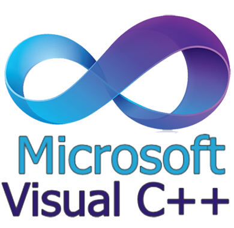
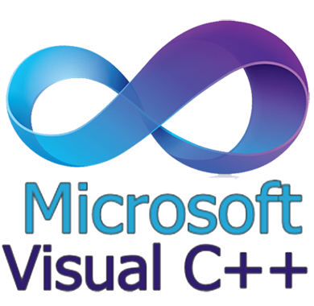

Home Page
幫助初學者熟悉資訊領域的知識，盡量以循序漸進的方式排版。
- Knowledge: 分開介紹各種資訊領域的工具知識。
- 版本控制：學習使用版本控制來儲存你的程式碼，缺少這個觀念會導致無法進行程式碼的協同作業與多裝置間的開發。
- 程式開發：由基礎到困難的程式語言講解，必須要有流程控制的觀念。
- 網頁基礎知識：學習基礎的結構語言，瞭解如何呈現網頁界面。
- 資料格式：學習如何選用儲存格式及其應用。
- Multi-Language Learning: 講解一些跨程式語言的概念，從閱讀文法開始適應，會用較多不同實作舉例。
- Keywords: 關鍵字延伸閱讀。
Version Control
撰寫程式前，必須先理解如何控制版本。
Git
GitHub
GitHub 只是使用 Git 的網路倉儲服務，這兩個是不同東西。
GitLab、BitBucket、Microsoft Azure 等都有提供類似的功能。
Git
Git 是一種分散式版本控制架構。
其中版本控制就是將 Text-based File 進行管理的方法。 試想，將一個檔案新增 n 行，刪除 m 行，可以變成另一個檔案； 只需要儲存這兩個變更，而非同時儲存兩個檔案（除非最差的狀況下）。 這個比較的演算法算是經典題目，有興趣可以自行搜尋。
至於此架構下的其他 Binary File 只能同時儲存兩個副本，因此不推薦將頻繁變更的 Binary File 加入， 諸如：圖片、音樂、影片、壓縮檔、編譯好的程式和程式庫、資料庫（需要額外版控）等等。
版本控制最大的好處即是，新增 n 行，刪除 m 行，可以成為最新的版本；
新增 m 行，刪除 n 行，可以回到上一個版本。
每次新增刪除會視為一次提交 (Commit)，
當一個還未提交的內容想要清除，則會移轉成 stash，回到上一個提交（可以復原）。
提交可以取別名，稱為標籤 (Tag)，如 v1.0，這樣就不用打它的 Hash code 來操作了。
為了測試方便，提交不是線性堆疊的，而是可以基於相同的提交延伸出不同的堆疊， 稱為分支 (Branch)；基於的提交（分岔點）和其之前的提交稱為 Base。 在 Git 系統中第一個 Branch 通常稱為 master 或 trunk。 而分支跟標籤類似，只差在分支會跟隨新提交而往前移動，最新的提交稱為 ORIG_HEAD， 而當前的提交稱為 HEAD。 如果一個分支被刪除，它的 Base 以外的提交也會被刪除，除非它的 ORIG_HEAD 有掛標籤。
每個提交會有一個 Hash code， 可以視為一個修正 (Patch)。意即，如果當前這個分支修正了某個錯誤，其他分支還沒， 它們可以進行合併 (Merge)，產生衝突 (Conflict)。 此時可以透過人為或自動修正，創造一個合併提交 (Merge Commit)，即可解決。 於是 Base 就納入了該 Hash code， 在比較時就會認為此修正已經加入，即使目前版本中可能被改掉（Debug 就是另一個故事了）。 而因為有「合併」的動作，所以版本控制並非樹狀的結構。
分散式架構可以視為一個遠端 (Remote side) 與多個近端 (Client side)，以遠端為基準，通常不包含 stash。 遠端為主要儲存地，其他近端可以透過克隆 (Clone) 在線下修改後，再推送 (Push) 回去。 要注意所有人必須跟遠端的所有 Branch 有相同的 Base 或不存在，才可以進行推送。 當遠端不存在時，其中一個近端如果變成伺服器，其他近端將推送目標指向它，也可以做為遠端（當然也要注意 Base 問題）。
當推送時 Base 不符合會產生衝突。代表開發者私底下竄改了某些提交，必須選擇放棄近端或遠端其中一邊的歷史。 若放棄遠端，將會執行強制推送 (Force Push)，將會把遠端的目標分支強制同步成近端的樣子。
Remote & Client
從遠端下載 master 分支到近端。 其他分支會在開發者切換時下載下來。
git clone https://github.com/MMD-Training-2019/SupplementaryMaterial.git
更新當前的分支。會比較 Base，如果近端比較新，會讓近端移轉到匿名分支上執行合併。
git pull
推送當前的分支。會比較 Base，如果遠端比較新，會叫近端手動執行 Pull（遠端最大）。
git push
強制推送。請先跟其他近端好好溝通過，否則應該將你的改變成為新分支。
git push -f
Commit
啟動演算法，顯示單一檔案與上一次提交的改變。按下 q 可以退出。
git diff fileA.md
啟動演算法，掃描並記錄改變。其中 "." 表示當前資料夾，可以為倉儲內任何檔案名稱。
如果是資料夾，則會包含子資料夾和所有檔案。
而刪除指令 git rm、移動與重新命名指令 git mv 皆會更新狀態，同於 git add。
git add .
git add fileA.md fileC.py
如果在子資料夾中不想退出可以使用全域掃描。
git add -A
包裝提交（剛剛記錄到的改變）。如果沒有改變就不行新增。 每個提交都需要加上訊息。
git commit -m "First commit."
如果沒有給訊息，會進入 Vim 畫面， 按下任意字母鍵可以啟動輸入模式打入多行訊息。
輸入完畢後按下 Esc，輸入 :wq 離開 (Write & Quit)。
git commit
檢視近端的提交。可以選擇看所有的分支或圖形化顯示。按下 q 可以退出。
git log
git log --all --graph
切換當前提交。要注意如果不是分支是無法新增提交的。
git checkout aaaaaaa
若想要取消改變，可以使用 Stash，讓檔案回到上一個提交的狀態。
git stash
清除已記錄的改變 (git add)，不會影響檔案狀態。可以針對特定檔案操作。
git reset
git reset fileA.md fileC.py
從最近的提交開始拆除，一直拆到指定的提交（不包含）。這個動作不會影響檔案狀態。
git reset aaaaaaa
復原拆除。
git reset 'HEAD@{1}'
Tag
顯示近端的標籤。
git tag
幫當前提交取名稱 v1.0。
git tag -a v1.0 -m "version 1.0"
推送新的標籤到遠端。如果要更新，可以加上 -f，不會動到提交的部分。
git push --tag
git push --tags
刪除近端標籤。
git tag -d v1.0
刪除遠端標籤。語法跟分支是一樣的。
git push origin :v1.0
移動近端標籤到某個提交，相當於刪除再新增。推送時用更新的方式。
git tag -f v1.0 aaaaaaa
Branch
顯示近端的分支。
git branch
新增分支 "new-branch" 在近端。如果名稱存在不會新增。
git branch new-branch
切換到 "new-branch"。
git checkout new-branch
第一次推送 "new-branch" 到遠端。遠端分支前面會掛一個 origin。 遠端創立之後就不用特別講明了。
git push origin new-branch
刪除近端分支 "new-branch"。
git branch -d new-branch
刪除遠端分支。要注意遠端的提交會被移除！
git push origin :new-branch
移動近端分支到某個提交，相當於刪除再新增。推送時用強制推送。
git branch -f new-branch aaaaaaa
Merge
合併 "new-branch" 到當前分支。 如果成功，可以直接做其他事；如果失敗，需要手動解決，額外新增一個合併提交。
git merge new-branch
舉手投降，還原到還沒合併的狀態。
git merge --abort
Rebase
修改特定提交。輸入指令預覽最近的 3 個提交，
這時會開啟 Vim，把想要更改的提交狀態改為 "edit"，輸入 :wq 離開。
git rebase -i HEAD~3
這時會切換到該提交，並且可以更改，改完後執行繼續。
git rebase --continue
會疊加其他提交，有衝突的話需要解決。或是選擇放棄也可以。
git rebase --abort
Submodule
子倉儲就是新增一個參考倉儲到倉儲裡，只要切換目錄到裡面，基本操作都一樣。 通常被需綁定版本的相依套件會使用。
不過子倉儲的提交會在主倉儲綁定，所以改變時主倉儲必須新增提交來更新。
子倉儲被視為檔案，可以被 git add、git rm、git mv 等指令操作。
將倉儲加到當前倉儲的當前目錄中。
git submodule add https://github.com/MMD-Training-2019/SupplementaryMaterial.git
克隆後下載子倉儲。加上 --recursive 會套用到子倉儲的子倉儲。
git submodule update --init --recursive
Multi-Language Learning
在各種程式語言間可以相互學習的概念。
Assignment
指派 (Assignment) 是程式語言中最基本的一種語法，亦也是一種最關鍵的邏輯問題，為一種變數 (variable) 之間的轉移手段。指派通常有幾種行為：移動 (move)、複製 (copy) 與參照計數 (reference counted)。為了方便說明，現在就以三種都具備的 Rust 程式語言來表示。
首先以下是 Rust 中的指派語句：
#![allow(unused)] fn main() { // 指派語句 let mut a = 20.; // 修改也是指派語句 a = 10.; assert_eq!(a, 10.); // pattern matching 也是指派語句 match 10. { a => { assert_eq!(a, 10.); } _ => {} } // if let pattern matching 也是指派語句 if let a = 10. { assert_eq!(a, 10.); } // while let pattern matching 也是指派語句 let mut iter = [10.].into_iter(); while let Some(&a) = iter.next() { assert_eq!(a, 10.); } // for-loop 也是指派語句，語意同上 for a in [10.] { assert_eq!(a, 10.); } // closure 預設是取指標，但是其生命週期必須比原始資料短 let f1 = |b| { assert_eq!(a, b); }; // 使用 move 關鍵字會使用指派語句 let f2 = move |b| { assert_eq!(a, b); }; // 呼叫函式也是指派語句，同於上面的 b = a f1(10.); f2(10.); }
Rust 在預設的情況下選擇使用 move 或 copy 來處理指派問題，再加上必須用關鍵字 mut 標示可變變數，因此效能上會有靈活調整的優勢。有趣的是雖然 Rust 是靜態型別的程式語言，但是上面的範例完全不用標明類型，都是自動推導的。
Move
移動算是比較新的概念，而且只發生在語義上。當 a 變數移動到 b 變數時，可視為資料的完全轉移，因此 a 變數就不可使用了。亦即，a 的資料的生命週期 (life cycle) 被「延長」到新的變數，直到變數 b 被刪除，資料才會被刪除。
編譯器在實作時，其實只要把 a 和 b 視為相同的記憶體，就可以達成移動的流程。
在 C++ 中，預設都是複製，另外可以使用 std::move() 函式來達成變數移動。
Copy
複製的方式固然簡單，但是也意味著造成最大的執行成本：時間和空間都不可避免的浪費掉了，特別是對於唯讀 (read-only) 資料。若是程式中可以標明常量 (constant) 或可變 (mutable) 變數，還可以將常量的複製行為移除，稱為 Copy propagation。但若是沒有，複製一整個資料可說是非常重的負擔。
在 Rust 中，只有原始類型 (primitive type) 預設是可以複製的，包含布林 (boolean)、整數 (integer)、浮點數 (float)、字元 (character)、單元 (unit)、指標 (pointer)。至於其他類型 struct、enum、union 則必須實作 Clone trait，以達成可複製的條件。
#![allow(unused)] fn main() { #[derive(Clone, PartialEq, Debug)] struct Point { x: f64, y: f64, } let mut p1 = Point {x: 0., y: 0.}; let p2 = p1.clone(); assert_eq!(p1, p2); p1.x = 10.; assert_ne!(p1, p2); }
上面的程式使用派生巨集 (derive macro)，會自動實作複製的行為，但若是其中有欄位 (field) 的類型沒有實作 Clone，就必須手動用實作語法 impl Clone for Point {...} 處理。上面其他的 trait 也是相同的道理，PartialEq 可以實作「等於」與「不等於」運算子，Debug 可以實作運行期間錯誤訊息的格式。達成可複製條件後，就可以手動用 Clone::clone() 這個方法來複製。
若要達成跟原始型別一樣，指派時自動複製，則可以實作一個標記用的 Copy trait，這樣編譯器在解析時會自動呼叫 Clone::clone()。
#![allow(unused)] fn main() { #[derive(Copy, Clone, PartialEq, Debug)] struct Point { x: f64, y: f64, } let mut p1 = Point {x: 0., y: 0.}; let p2 = p1; assert_eq!(p1, p2); p1.x = 10.; assert_ne!(p1, p2); }
Pointer and Reference
在認識參照計數之前，必須先認識指標 (pointer)。指標是指向變數的記憶體位置，是用一段整數來當做代號，可以藉由儲存指標來達成在變數之外存取該變數的數值。
然而，指標顯然也是另外一個變數，自然也可以有自己的指標，在語法上較難處理，也很花時間理解。這時候某些程式語言會推出語義上的指標，來參考原本的數據以免去複製的步驟，稱為參照 (reference)。
再者，指標顯然有一些致命缺陷，甚至是可被攻擊的目標：
- 懸掛指標 (hanged pointer)：原始的數值有自己的生命週期，若是在刪除後仍去存取，亦可能取到錯誤的數值。或是創建空指標時沒有指到正確位置就進行讀寫。
- 記憶體洩漏 (memory leak)：存入數值後忘記刪除，就刪除指標，會造成浪費記憶體空間（因為直到程式執行完才會清除）。
- 堆棧溢出 (stack overflow)：指標可以索取連續的記憶體陣列，但是如果檢索的長度超出範圍，會得到錯誤數值。
在 Rust 中，指標與參照是相同的，統一稱為指標 (pointer)。不能保證生命週期的指標稱為原始指標 (raw pointer)，寫作 *T；能保證生命週期的稱為智慧指標 (smart pointer)，寫作 &T，也是最常用的一種。能保證生命週期的行為也稱為記憶體安全 (memory safe)。記憶體安全也是 Rust 語言的一大賣點，所以預設不能使用原始指標，除非開啟 unsafe 選項。
原始指標操作簡單，但是較「危險」。智慧指標在 Rust 則是採取所有權 (ownership) 系統。
#![allow(unused)] fn main() { let mut a = 10.; { // b 借走所有權，不可使用 a let b = &mut a; // 修改記憶體 *b = 20.; } // b 生命週期提前結束，所有權還給 a assert_eq!(a, 20.); }
在上面的程式碼中，Rust 可以使用一個大括弧 {} 在執行區創造出一個範圍 (scope)，這個範圍跟函式、判斷式等 runtime 要素是一樣的。當使用 let 關鍵字指派一個新的變數，若變數沒有被移動，則都會在括弧關閉的地方被刪除。此概念在 C / C++ 中也有。
當使用 &a / &mut a 運算子，表示對變數 a 索取智慧指標，若有關鍵字 mut，則代表這個指標可以修改變數，前提是變數 a 也是可變的。索取指標會造成所有權被借走，導致 a 不能使用，這在編譯期間就會檢查，並且指出原始資料與指標之間的關係。
值得注意的是，這邊 b 不用加上 mut 標示為可變，因為指標僅修改指向的內容，而非自身。
所有權系統是為了保障執行序安全 (thread safe)，因此智慧指標只能在單一執行序使用，如果要在多執行序使用，比如說平行處理，則必須使用參照計數。
Reference Counted
在程式語言中，通常會有記憶體管理 (memory management) 系統。短暫的執行區稱為 stack，用來作為部份資料生命週期的判定；而必須跨越多個執行區、太龐大或長期使用的資料則會放置在 heap。Rust 的所有權系統都是在 stack 間移動，不過為了達成跨執行序存取，必須將資料轉移至 heap，這時就必須使用原始指標達成。
參照計數的概念在於，所有的資料都存於 heap，當新增「變數」（Python 稱為「名稱」）時，就會增加計數器；當參照的數量變成 0 時，就會刪除資料。例如 Java、JavaScript 或 Python 這種只有參照計數系統的程式語言，就是用模擬 stack 的方式移除資料的引用。不過，完全以參照計數為主的程式語言便需要一套垃圾收集 (garbage collection) 系統，移除長久未使用的變數，它們可能在載入的過程中遺留下來，造成另類的記憶體洩漏。
在 Rust 中，std::rc::Rc 和 std::sync::Arc 是標準庫 (standard library) 提供的參照計數器，Rc 是單執行序使用的，可以應用於在容器之間分享資料；Arc 則是多執行序使用的，可以在不同執行序間分享資料。若沒有多執行序用途，Rc 存取的速度會較好。
另外得注意的是，Rc::new() 和 Arc::new() 會移動資料到內部，因此一開始就要用參照計數器的話就必須將資料包裝起來。而解除時是使用 Arc::try_unwrap 和 Rc::try_unwrap，可以直接將內部資料移動出來，不過必須在計數器為 1 的情況下。
#![allow(unused)] fn main() { use std::{ sync::Arc, rc::Rc, }; // 建立資料 let a = Arc::new(0); // 增加引用 let b = a.clone(); // 檢查計數器 assert_eq!(Arc::strong_count(&a), 2); let a = Rc::new(0); let b = a.clone(); assert_eq!(Rc::strong_count(&a), 2); }
至於跨執行序分享資料時，若需要修改該資料，會造成資料競爭 (data racing)，產生不同步的情況，因此 Arc 無法像 Rc 一樣輕鬆的改變 heap 上的數值。為了解決資料競爭，可以加上一個互斥鎖 (mutex lock)，使用一個原子化 (atomic) 的布林值（通常是 u8）來鎖住資料，執行序必須檢查鎖是否開啟，等到開啟後才可以鎖住並修改資料。Python 中就有一個全部變數共用的鎖，稱為全域直譯器鎖 (Global Interpreter Lock, GIL)，因此其實現新執行序的方式便是再開一個解譯器，避免資料競爭。
#![allow(unused)] fn main() { use std::sync::{Arc, Mutex}; let a = Arc::new(Mutex::new(0)); *a.lock().unwrap() = 10; assert_eq!(*a.lock().unwrap(), 10); }
不過對於原始類型，原子化類型 std::sync::atomic::Atomic* 應該更容易使用，而完全不需要互斥鎖。因為在支援的平台上，處理器可以自動排程寫入狀態，以避免底層的資料競爭，不過浮點數是不支援的。
除了普通持有資料的計數外，還有可懸掛空值的弱參照 (weak reference)，因此前者相對之下稱為強參照 (strong reference)。弱參照持有的原始指標可以修改，類似於 mut &T 或 mut &mut T，可以改變指向，而強參照持有原始資料的指標，因此只能固定。Rc::downgrade() 和 Arc::downgrade() 可以將強參照降級為弱參照，不過由於弱參照會有空值，使用數值時都需要重新檢查，較花時間。
Regular Expression
正規表達式 (RE, Regex, Regular Expression) 是一種擷取規則文字的機制。其原理為：
- 建立文法 (Grammar) 表達式。
- 演算法根據其規則進行比對 (Match)。
- 若相符，將會把文法中的群組 (Group) 內容取出，稱為 Token。
- 若不相符，會跳過。
- 繼續尋找直到搜尋完畢。
在閱讀 Syntax 之前，可以先透過本節學習如何從有規律的文字中擷取需要的內容。
本節使用 JavaScript 表示 RE 文法，故會有夾注號 / 如：/re+/。使用其他程式語言時可忽略，按其規則為準。
推薦的測試網站：https://regex101.com
Rules
Base Grammar
除了特殊字元，RE 的文法等價於要解析的文字：
/abc/ // abc
特殊字元，作為起始即有特殊作用：., ?, +, *, |, [, (, ), $, ^, \
非特殊字元，可單獨作為表示，但是可配合特殊字元：,(comma), {, }, ]
Any Single Character
使用 . 表示任意單一字元，包含不可視字元。
Escape Character
跳脫字元 (Escape Character) 為反斜線 \。
主要可以表示特殊規則，幫助縮減文法長度。
另外可以強迫特殊字元（包含自身）變成普通文字。
Invisible Characters
不可視字元 (Invisible Characters) 為顯示或列印時沒有顯示符號的字元，如下：
| 符號 | 說明 |
|---|---|
| 空白 (Space) |
\t | 縮進 (Tab) |
Linux & MacOS: \n, Windows: \r\n | 換行 (Newline) |
Repetition
單一文字重複規則如下：
/a{n}/ // 表示 a 重複 n 次
/a{n,}/ // 表示 a 最少重複 n 次，最多無限次
/a{n,m}/ // 表示 a 最少重複 n 次，最多 m 次
而簡化語法如下：
/a?/ // 表示 a 最少重複 0 次，最多 1 次（可寫可不寫）
/a+/ // 表示 a 最少重複 1 次，最多無限次
/a*/ // 表示 a 最少重複 0 次，最多無限次
若前一個是群組則會套用到群組的規則。
/(abc)+/ // abc, abcabc, abcabcabc, ...
Group
使用群組 (Group) 功能擷取文字，符號為 ( 和 )。
定義 Group 0 為整段符合的文字，剩下的從 1 開始編號，重複的以此類推。
/(aaa)(bbb)/ // g0: aaabbb, g1: aaa, g2: bbb
/(aaa)(bbb)+/ // g0: aaabbbbbb, g1: aaa, g2: bbb, g3: bbb
若沒有要擷取文字，為了方便定義規則，可以宣告為匿名群組。
/(?:abc)+/
Logical Or
邏輯或 | 運算子能夠將多個類似的規則在同個文法中表現。
然而正規表達式的邏輯或運算子是最低優先權的，必須使用匿名群組等提升優先權。
/aa(?:bb|cc|dd)e/ // aabbe, aacce, aadde
List
清單 (List) 表示單一字元的多種選項，是邏輯或的一種縮寫，符號為 [ 和 ]。
/a[bcd]e/ // abe, ace, ade
/a(?:a|b|c)e/ // 等價
為了方便，清單支援 ASCII Code 的範圍 (Range) 標示，且可以連續標示。 不過如果是其他字元，會以 ASCII 的編號表示。
/[0-9]/ // 0 ~ 9
/[a-zA-Z]/ // a ~ z, A ~ Z
另外清單前端加上 ^ 符號為反向集合，會對應到沒有顯示的字元，可以只標示例外即可。
/[^a-z]/
而清單也支援重複的定義。
/[qrs]{3}/ // qqq, rrr, sss, ...
Anchor
定位點 (Anchor) 可以幫助在文字中定位，不代表任何字元，常用的如下：
^：整個字串或行的開頭。$：整個字串或行的結尾。
Common Tokens
以下列舉常用的規則：
| 符號 | 說明 | 等價 | 反向 |
|---|---|---|---|
\s | 不可視字元 | [\r\n\t ] | \S |
\d | 數字 | [0-9] | \D |
\w | 文字 | [0-9a-zA-Z] | \W |
\b | 文字邊界（定位點） | (^\w\|\w$\|\W\w\|\w\W) | \B |
Flags
正規表達式的選項稱為 Flag，可能因為不同程式語言的規則而異。常用的如下：
| Flag | 說明 | 備註 |
|---|---|---|
| global | 不只作用一次 | Python 不支援 |
| multiple line | 啟用後，^$ 對應行的開頭和結尾，而非整個字串 | |
| insensitive | 忽略大小寫 | |
| extend | 啟用單行註解功能 # 並忽略空白標示 | JavaScript 不支援 |
| stiky | 每次符合必須相連 | 僅 JavaScript 支援 |
| unicode | 支援萬國碼，\w 將對應所有其他字元 | |
| ascii | 僅支援 ASCII Code | 僅 Python 支援 |
在 JavaScript 中，Flag 可以寫在括弧後啟用。
/abc/gm
Token Example
試著思考題目，並參考正規表達式的撰寫思路。
CSV
逗號分隔值 (CSV, Comma-Separated Values) 通常為逗號、縮進、空白等符號分開數值。
0.01 0.06 -9.997
1.69 +40.44 4.6321
思路：
-
數字在文法中可以表示成：
/d+/ -
浮點數可以表示成：
/\d*\.?d+/ -
帶有符號的浮點數可以表示成：
/[+-]?\d*\.?d+/ -
每行有三個數值，用空白分隔，可以表示成：
/^([+-]?\d*\.?d+) ([+-]?\d*\.?d+) ([+-]?\d*\.?d+)$/m
可得：
| Match | g1 | g2 | g3 |
|---|---|---|---|
| 1 | 0.01 | 0.06 | -9.997 |
| 2 | 1.69 | +40.44 | 4.6321 |
G Code
假設這是某台工具機的指令碼，你必須設計它的速度規劃。 在忽略換行記號的情況下，試著抓取以下每行 G code 中的 G 碼、座標和進給速度。 不相關的內容可以忽略。
%
O100
G00 G40 G49 G20 G90
N05 M10
N10 M05
N15 G91 G28 Z0
N20 G90
N25 T1 M06
N30 G00 Z.1
N35 G00 X2.5 Y2.5
N40 G01 Z-.25 F200
N45 G01 X5 Y5
N50 G00 Z.1
N55 G28 X0 Y0
N60 M05
N65 M45
%
-
根據 N、G、X、Y、Z、F 排列順序，每個符號會跟隨一個整數或帶符號的浮點數。
/N\d+/ /X[+-]?\d*\.?\d+/ -
而 N、X、Y、Z、F 為可選的項目。
/(?:X([+-]?\d*\.?\d+))?/ -
可以使用
\s*代表間隔的空白，每行可排列成：/G(\d+)\s*(?:X([+-]?\d*\.?\d+))?\s*(?:Y([+-]?\d*\.?\d+))?\s*(?:Z([+-]?\d*\.?\d+))?\s*(?:F([+-]?\d*\.?\d+))?\s*/
可得：
| Match | g1 | g2 | g3 | g4 | g5 |
|---|---|---|---|---|---|
| 1 | 00 | ||||
| 2 | 40 | ||||
| 3 | 49 | ||||
| 4 | 20 | ||||
| 5 | 90 | ||||
| 6 | 91 | ||||
| 7 | 28 | 0 | |||
| 8 | 90 | ||||
| 9 | 00 | .1 | |||
| 10 | 00 | 2.5 | 2.5 | ||
| 11 | 01 | -.25 | 200 | ||
| 12 | 01 | 5 | 5 | ||
| 13 | 00 | .1 | |||
| 14 | 28 | 0 | 0 |
Syntax
本篇將講述常見程式語言的解構方式，以常見的程式語言作為範例。建議先閱讀 Regular Expression。
閱讀此篇有助於在不同語言之間切換，並有助於理解新的語言；無論為結構語言還是程式語言。
Lark Parser
Python 套件 lark-parser/lark 可以自訂程式語言的規則並解析它們。
Lark 基於 EBNF，並使用 Earley Parser，本篇將解說電腦如何閱讀「語言」。
基本元素：
"A" "ABC" "(" ")" // 字串與符號
"ABC"i // 不分大小寫的字串
/regular_expression/flag // Regular Expression
"a".."z" "1".."9" // 範圍
expression ~ n // 前一個子句必須出現 n 次
expression ~ n..m // 前一個子句必須出現 n 到 m 次
expression? // 前一個子句可以不存在或出現一次
expression* // 前一個子句可以不存在，或可以無限重複
expression+ // 前一個子句至少出現一次，並可以無限重複
(expression expression ...) // 提升優先權
[expression expression ...] // 可選，同於 (expression expression ...)?
定義句：
子句一: "1".."9"
子句二: 子句一 "+" 子句一
上面的 子句二 可以表示 1 + 1。
基本上，為了排版，電腦使用的語言會忽略空白：
%ignore /\s+/
上面的空白用 RE 表示，意味著一個或重複的不可視字元（包含 Tab）。
忽略後，除非顯式表示，否則解析器不會計算。
例如：1 + 1 和 1+1 是等效的；A (B) C 和 A(B)C 是等效的。
但是文字通常有連續性，除非用符號分離，否則一定要至少隔一個空白。
而文字也是定義的一部份，因此當變數名稱訂為：
variable_character: "a".."z" | "A".."Z" | "_"
variable: variable_character+
符號 _ 也會被當成是變數可用的字元，並保持連續性。
一些程式語言也許有例外，如 JavaScript 允許 $ 作為變數名稱，而 Matlab 不允許 _ 作為變數的第一個字元。
子句的組成會影響解析的順序，進而影響程式中的優先權 (Priority)。
digit: "0".."9"
int: digit+
plus: int "+" int
strong: "(" (int | plus_statement) ")"
base: int | strong | plus
plus_statement: base ("+" base)+
如上所示，plus_statement 可以表示 (1 + 20) + 7、(5 + 6)、4 + (6 + 9)、2 + 777 等語句。
而以下文法：
digit: "0".."9"
int: digit+
assignment: plus_statement "=" int
對於 2 + 3 = 5 會先解析 2 + 3，而非 3 = 5。
Commonly Used Syntax
可簡單歸類程式語言中的語法構成。
其中 op1, op2, ... 為使用的符號，可為任何字元或字串。
以下將舉例各式程式語言的部分文法：
Comment
comment: op1 /[^\n]*/
multiline_comment: op1 /[\s\S]*/ op2
註解是程式語言中很重要的一部份，因為他們不會影響執行內容。 不過這些說明內容可以被提取出來做為說明文件等用途。
-
C / C++ / Java / JavaScript / C# / ...
// 單行註解 /* 區段註解 */ -
Python
# 單行註解 """區段註解""" # 其實是多行字串 -
Matlab
% 單行註解 %% 段落註解，以下的區塊可以被折疊。 -
Lua
-- 單行註解 --[[ 區段註解 --]]
Line Break
某些語言是會忽略換行記號的，因此可以併成一行也不會影響解析，有助於在只有一行的情況下輸入，如 Bash 中。
%ignore /\r?\n/+
要注意有些程式碼並不是結尾有 ; 註記就是忽略換行記號，
如 Matlab 只是為了隱藏輸出訊息；Lua 沒有結尾記號但是會忽略換行。
而像 JavaScript 會在換行處自動檢查並補上，但是官方仍建議開發者必須打上。
至於 Python 則是加上 ; 可以併做一行，可是無法加上縮排。
忽略換行記號的語言如 C / C++ 可以這樣寫：
a = (1 + 2)
* (2 + 3)
* (3 + 4);
可是如 JavaSript 有自動插入的機制，如下會導致強制段行（return、break、throw, continue 結尾）：
return
1 + 3;
而在意換行記號的語言因為閱讀需要，會有換行的策略，如：
-
Python：可以在括弧
()、[]、{}中換行。但是同時因為縮排規定，其中的縮排不能比原始行小。a = ( "aaa", "bbb", "ccc", ) -
Bash：必須使用
\符號在換行結尾。rm -f file_a.md \ file_b.md ${FLAG} -
Matlab：可以在
;後換行，除此之外必須使用...符號在換行結尾，而且其之後的內容會被視為註解。a = (1 + 2)... * (2 + 3)... * (3 + 4); a = [... 這裡要加 1, 2, 3; 4, 5, 6; 7, 8, 9] -
Markdown：段落之間必須空一行，否則視為上一行，至於其他如列舉或標題等語法不受限。
aaa, bbb. ccc: 1. ddd with ddd 1. eee 1. fff
Indentation
縮排通常做為排版使用，不過仍有語言作為程式碼區塊的判定，如 Python。
indentation: " " ~ 4 | /\t/
block: indentation+ code_block
若非使用縮排，程式區塊會使用符號或語句作為標記。
-
C / C++ / Java / JavaScript / C# / ...：使用大括弧
{}。if (a < b) { return 0; } -
Lua：不需要換行。有對應記號。
if a < b then return 0 end while a < b do a = a + 1 end -
Latex：有對應記號。另外括充模組也能夠提供巨集 (Macro) 讓語法比較好看。
\if \else \fi % 判斷式 \loop \if \repeat % While 迴圈，\repeat 有 \fi 的功能。 -
Matlab：需要換行。通常搭配
end關鍵字結尾。if a < b return end
Binary Operator
binary: statement op1 statement
為兩項運算，如一般的數學式。前後的 statement 可以不相同。
在計算的情況，通常可以連續操作如 a + b + c 或 a = b = c；
但為避免讀錯，如 a += b 的縮寫不會允許連續的語句。
-
Common
a + b a < b a = b a += b a.b -
Python
a and b # Logical AND a in b # Contain check a is b # Same memory position check a := b # Assignment, but repersent "a" itself (in expression) -
C / C++
a && b // Logical AND a->b // Pointer member a::b // Namespace member a, b // Run "a" and "b" but repersent "b" itself (in expression) -
JavaScript
a === b // Same memory position check -
C#
a ?? b // Repersents "b" if "a" is "null", otherwise repersent "a" a?.b // Repersents "null" if "a" is "null", otherwise repersent the member "b" -
R
a <= b # Assignment
Unary Operator
leading_unary: op1 statement
trailing_unary: statement op1
分成前置或尾置，為了相容二元運算，通常優先權會最大。 但是因為 C++ 的前車之鑑，發現它們極易破壞可閱讀性，因此新的程式語言就較沒有出現。
-
C / C++
!a // Logical not ~a // Byte inverse *a // Pointer get value &a // Get position to pointer ++a // Plus 1 to "a", then represent "a" a++ // Represents "a", then plus 1 to "a" -
Python
not a # Logical not yield a # Generator get input value (in expression) -
C#
a? // Type "a" can be "null" -
Haskell：函數型程式語言，語法與數學式相仿，函式優先權最高。由
f x1 x2 ...表示函式f和其參數x1、x2等。f a = sin a * 10 -- Same as "(sin a) * 10", "f" and "sin" is function.
Ternary Operator
ternary: statement op1 statement op2 statement
較長的句型，由兩個運算子組成。
-
C / C++ / Java / JavaScript / C#
a ? b : c // If "a" is true, repersents "b", otherwise repersents "c" -
Python
b if a else c # If "a" is true, repersents "b", otherwise repersents "c" a for b in c # An iterator generate "a", extract "b" from "c" during iterating a for b in c if d # Same as above, skip if "d" is "False"
Other Statements
至於其他就比較多元了。因此，基礎概念必須先熟悉，如型別標示就會很大程度的影響文法， 但是只要知道該概念會需要哪些參數、選項，自然便會容易理解。
如單純的 while loop 在哪種語言都沒什麼變化：
-
C / C++ / Java / JavaScript / C# / ...
while (check_statement) { run_statements } // Check after run once do { run_statements } while (check_statement) -
Python
while check_statement: run_statements -
Rust
#![allow(unused)] fn main() { while check_statement { run_statements } }
而物件導向有些卻有可見性，有些會聲明物件本身為 "self"：
-
C++
public: decorator return_type func_name(arg1_type arg1, arg2_type arg2, ...) { run_statements } -
Python
def func_name(self, arg1, arg2, ...): """Doc string""" run_statements
最後舉例 Function 的表示百百種：
-
C / C++：有 Closure 語法。
// Normal Function decorator return_type func_name(arg1_type arg1, arg2_type arg2, ...) { run_statements } // Lambda Fuction (Closures, only in C++) [refer_mode] (arg1_type arg1, arg2_type arg2, ...) -> return_type { run_statements } // Generic Fuction (only in C++) template<template_option> decorator return_type func_name(arg1_type arg1, arg2_type arg2, ...) { run_statements } -
Python：沒有 Closure 語法，自動處理。
# Simple Function def func_name(arg1, arg2, ...): """Doc string""" run_statements # Lambda Function lambda arg1, arg2, ...: return_statement # Typed decorated Function @decorator def func_name(arg1: arg1_type, arg2: arg2_type, ..., *, kward1: kward1_type, ..., **, kward2: kward2_type, ...) -> return_type: """Doc string""" run_statements -
JavaScript：沒有 Closure 語法，自動處理。
// Simple Function function func_name(arg1, arg2, ...) { run_statements } // Lambda Function function (arg1, arg2, ...) { run_statements } // Lambda Function (arg1, arg2, ...) => { run_statements } // Lambda Function arg1 => return_statement -
Rust：有 Closure 語法。
#![allow(unused)] fn main() { // Simple Function fn func_name(arg1: arg1_type, arg2: arg2_type, ...) -> return_type { run_statements return_statement } // Generic Fuction fn func_name<template_option>(arg1: arg1_type, arg2: arg2_type, ...) -> return_type { run_statements return_statement } // Closures |arg1: arg1_type, arg2: arg1_type, ...| -> return_type { run_statements } } -
Go：沒有 Closure 語法，自動處理。
func func_name(arg1 arg1_type, arg2 arg2_type, ...) return_type { run_statements }
Expression and Statement
表達式 (Expression) 和陳述式 (Statement) 的差別在於， 前者為一種值 (value)，後者不代表任何運行結果，範例如下：
a = sin(pi);
先不管是什麼程式語言，上面的意思假設是「用 pi 參數呼叫 sin 函式，將結果存入 a 名稱中」，
那 pi、sin(pi) 是一種表達式，而 a = sin(pi) 是一種陳述式。
單純的陳述式例如模組導入：
from sys import exit
然而如 C/C++ 的指派 (assignment) 式有表達式的功能，指派的同時代表右值。
if (i = true)
always_go();
原本 Python 的指派式並非表達式，但是 Python 3.8 新增的 assignment expression (PEP 572) 讓指派也有代表右值的功能。
if i := True:
always_go()
另外 C/C++ 的逗號運算子 (comma operator) 代表最後項的值。 不過這個運算子優先權太低，導致必須用括弧提昇優先權，酷似函式呼叫容易搞混，因此不常用。
int will_be_10 = (first(), second(), 10);
類似的特性被 Rust 引用，任何 code block 都是表達式（代表末尾值，加分號 ; 成為陳述式）：
#![allow(unused)] fn main() { /// function code block 可以不寫 return fn my_function() -> u8 { 10 } let a = if check() { 10 } else { 20 }; let b = while check() { dothing(); callback() }; // 匹配，可以解決 none、try catch 和 switch case 的問題 let c = match b { MyCase::Done(done) => done, // return 關鍵字是從函式回傳而非 code block // return 反而是陳述句 MyCase::None => { return Result::Err("not work"); } }; // 另一種 match pattern let d = if let Case::Done(done) = b { 10 } else { 20 }; }
JavaScript 的函式也是很經典的例子，總共有三種函式寫法：
/// 這邊只是示範，const 變數不可以重複指派
// 函式陳述式（不用結尾分號）
function f() {}
// 函式表達式
const f = function () {};
// 無 this 的箭號函式 (arrow function)
const f = () => {};
// 異步函式的版本
async function f() {}
const f = async function () {};
const f = async () => {};
// 無指派，執行後回收函式本體
(function () {})();
Languages
學習一些程式語言範本。
Python
本篇簡介基礎概念。
主張：Python 為一種基於易於撰寫與閱讀且擁有強大功能性的程式語言。
常用的應用為：
- 網際應用程式：伺服器後端程式與溝通。
- 桌面腳本：方便操作檔案或系統排程而撰寫的編程。
- 科學用途：進行較深入的數學運算，如矩陣、代數、微積分等等。
- 非高效使用者界面：反應不須即時的圖形化使用者界面 (GUI, Graphical User Interface)。
- 內嵌語言：主程式需要一種高階語言作為編程使用。
官方使用 C 語言來做實作直譯器，稱為 CPython，實現如下重要的概念：
- 得益於 C 語言程式庫的延伸性，提昇執行效能。
- 原型 (Prototype) 規範，可以與多種程式語言交換資料。
- WSGI (Web Server Gateway Interface) 協定可以使網頁框架變得更簡單。
- 模組 (Module) 規範使製作與分享擴充功能更容易，令 Python 擁有大量的模組社群。
- 語法相較於其他多功能的程式語言而言更簡單明確，除了完整的物件導向功能，
還具有 Bootstrapping 的特性，並且可以使用標準庫內的高階功能。
其中魔法 (Magic Function / Method / Name) 名稱（如
__init__）的概念是非常獨特的。 - 能夠自解譯，當 Python 作為字串 (String) 輸入時，可以直接執行。
使用 Python 必須先知道它的缺點:
- 速度不夠快：跟所有高階程式語言一樣，Python 的速度源自於底層優化，當程式碼複雜度已經是極限低時， 因為那些方便安全的功能，Python 的速度永遠不是它的強項，你只能等待 CPython 更新或改善程式庫來強化性能。 根據測試，它在相同邏輯下會比優化的 C 語言慢 20~200 倍。
- 相對龐大：同於高階程式語言的問題，Python 包裝成產品是 Byte Code 加上虛擬層，仍沒有機器碼小。
Syntax
Python 是看換行記號的，換而言之，你可以將每一行程式碼視為一條指令， 而不需要擔心它還有其他部分突然出現在檔案的其他地方，影響閱讀。
# 不會視為 1 + 1 - 2 * 9，而是兩次運算
1 + 1
-2 * 9
# 若括弧 ([{ 為開啟狀態，可以做換行
# 1 + 1 - 2 * 9
(
1 + 1
-2 * 9
)
(1 + 1
- 2 * 9)
程式碼區塊 (Code Block) 如果位階不是 Global，則必須縮排，縮排符號為 \t 或 4 個空白，
且同個檔案中只能擇一。官方建議使用後者。
如果手動換行，新的一行必須跟上一行有一樣或更多的縮排。
def func(a, b):
return a + b # func 的子程式碼
「優先權」運算子大幅減少。為了長得像英文書寫，捨棄了很多老派程式語言強制使用的括弧 () 符號。
當然如果括弧會讓程式碼更好看，仍建議放置。
# 舊習慣
if (font_size > 10):
font_size = 10
(a, b) = (b, a)
# 建議使用
if font_size > 10:
font_size = 10
a, b = b, a
Python 沒有 Entry Point 的設計，所以可以理解成由上而下的執行，就跟直譯模式一樣。 不過如果是撰寫檔案，還是建議將程式碼封裝在 Function 中來呼叫，避免先後順序產生問題。 以下則是「模擬」Entry Point 的做法，假裝有一個入口程式可以執行。 這個方法也是官方建議撰寫龐大架構（多個模組）時的守則：如果沒有需求，程式碼不應該在 Global 執行。
# main.py
def main():
print("Hello World!")
if __name__ == '__main__':
main()
Builtins
本節介紹程式碼常用的內建功能。
Data Types
Python 有一般程式語言常見的數據種類：
| 名稱 | 語法 | 說明 |
|---|---|---|
| bool | True, False | Boolean 布林值，代表 0 和 1。 |
| int | -10, 0b010, 0x010, 100_000 | Integer 整數，支援二進位、十六進位和長度標記。 |
| float | 10.0050, 30., .02, 5e-2 | Floating Point 浮點數，支援科學記號標示。 |
| complex | 1j, 10.j, .02j | Complex Number 複數，可以與其他數字運算，有實部和虛部。 |
| bytes | b"x00" | Bytes 字節，尚未編碼的字串，除非壓縮需求，否則建議不要使用。 |
| str | "sss", 'a1', "''", "\"", f"{n} mm" | String 字串，代表一個或多個文字，使用反斜線代表特殊記號。Python 3.6 開始支援 Format Literal。 |
與原始的數據類型相比，Python 的數據沒有 unsigned 的種類，也沒有 long 的長度調整，增加了方便性。
而且，bool、int、float、complex 都可以混和運算。
至於字串則是 Unicode 8 編碼而非二進制編碼，本身就具備各種常用的演算法且支援檢索功能，
並可以藉由物件導向的方式呼叫，如 'sbc'.find('c') 可以獲得 2。
而多行字串可以紀錄換行字元和縮排，用三個引號 """ 表示。
s = """
line1
line2
"""
在 Python 的物件導向概念中，數據類型也是物件，所以可以繼承作為更多用途。
Indexing
使用檢索運算子 (index operator) [] 按順序取值。
索引跟大部分的程式語言一樣都是從 0 開始，並且之支援反向檢索，-1 代表最後一項。
如果檢索失敗會引發 IndexError。
a = 'abc'
ac = a[0] + a[-1] # 'ac'
檢索功能不只有數字，通過運算子自訂，也可以使用任何物件。
另一種內建的語法為分割器 (slice)，使用分號 : 在檢索運算子中。
分割器的第一項為開始，第二項為結束，第三項為間隔數；如果沒有標示則默認為頭尾和間隔 1。
透過這種方法，可以將內容切片為新的複製品或參照。
bcd = 'abcdef'[1:4] # 'bcd'
abcd = 'abcdef'[:-2] # 'abcd'
fedcba = 'abcdef'[::-1] # 'fedcba'
其實相當於建立 slice 物件填入而已。
fedcba = 'abcdef'[slice(None, None, -1)]
像是知名模組 NumPy 使用 Tuple 容器一樣：
matrix[:, -1] == matrix[(slice(None), -1)]
Containers
除了特殊需求，Python 內建了各種完善且快速的容器。
Python 的記憶體都不是連續規劃的，所以可以儲存不同類型的內容，但是仍建議儲存有規則的內容。
而容器的大小稱為長度 (Length)，可以由 len() 函式獲得。
Tuple
元組 (Tuple) 是一種唯讀的鏈狀容器。
使用工廠函式 tuple 可以建立空的或轉換可迭代物件。
# 小括弧表示 Tuple，某些情形下可以省略但不建議
a = ()
a = (1, 2, 3)
a = (
"abc",
"def",
)
a = 1,
a = tuple([1, 2, 3])
常用來解構和包裝物件，其他容器也可以，但是 Tuple 的成本最低。
# 解構，按順序分配給 b=1, c=2, d=3
# 如果數量錯誤會出錯
b, c, d = a
# 回傳兩個值，其實是用 Tuple 包裝
return a, b
# For 迴圈解構
for a, b in [(1, 2), (3, 4)]:
...
檢索使用整數 int 和 slice。
a = ('a', 10, 'bc')
abc = a[0] + a[-1] # 'abc'
比較演算法可以直接用運算子達成，可是必須兩方皆為 Tuple。
(1, 2, 3) == (4, 5, 6)
List
清單 (List) 是能夠修改的鏈狀容器，支援排序演算法等操作。
使用工廠函式 list 可以建立空的或轉換可迭代物件。
# 中括弧表示 List
a = []
a = [1, 2, 3]
a = [
"abc",
"def",
]
a = list((1, 2, 3))
檢索使用整數 int 和 slice。
a = ['a', 10, 'bc']
abc = a[0] + a[-1] # 'abc'
透過 append、insert 方法來新增內容。
a.append(5) # 新增 5 到最尾端
a.insert(0, '888') # 在 0 處插入 '888'，後方的索引都會移位
透過索引 del 運算子和 pop 方法來刪除內容。索引不存在會引發 IndexError。
a.pop() # 刪除最後一項
a.pop(0) # 刪除第一項
b = a.pop(0) # 刪除第一項，該值交給 b
del a[5:10] # 刪除 5 到 9
透過索引指派運算子來改變內容。索引不存在會引發 IndexError。
a[3] = 'gcc'
a[1:6] = b[7:12:-1] # 長度必須一樣
a[:] = 'gcc' # 從其他可迭代物件複製值，長度忽略，a = ['g', 'c', 'c']
比較演算法可以直接用運算子達成，可是必須兩方皆為 List。
[1, 2, 3] == [4, 5, 6]
List 還支援排序，一般是使用 Hash 函式獲得的值，或可以自訂。
a.sort() # 由小到大
a.sort(reverse=True) # 由大到小
a.sort(key=getitem_func) # 由指定函式給值，該函式輸入一個項目後返回可分辨大小的數值
其他容器若想要排序，可以使用內建的 sorted 函式，可以獲得一個排列好的新 List。
sorted 函式支援任何可迭代物件，而且支援 reverse 和 key 選項。
new_list = sorted((5, 6, 8, 7)) # [5, 6, 7, 8]
Dict
字典 (Dict) 是一種可修改的樹狀容器。
使用工廠函式 dict 可以建立空的或轉換兩兩一對的可迭代物件。
任何可雜湊的 (Hashable) 物件都可以作為索引，每個索引都會配一個值，
值可以是任何物件。這種關係稱為鍵值 (Key Value)。
內建的可雜湊值諸如前面介紹過的數據類型、Tuple 還有等等提到的 Frozen Set。
其他自訂類型可以實作雜湊用的魔法函數 __hash__ 達成。
相同雜湊值的物件會被視為相同值，因此可修改物件都不支援雜湊值。
# 大括弧表示 Dict
# 每一項依序由 Key、冒號、Value 組成
a = {}
a = {2: "2", 4: "abc", "U": {0: [1, 2, 3]}}
a = {
"Name": "GOGO",
"Old": 80,
}
a = dict([(1, 2), (3, 4)])
檢索使用 Key，不存在會引發 KeyError。
若要避免空索引，可以使用 get 方法。
a = {'key': 10, 'a': 20}
n30 = a['key'] + a['a'] # 30
a.get('r', 70) # 70
透過索引指派運算子來新增和改變內容，另外還有 update 方法可以更新。
a['new'] = 50 # 更新 Key 和 Value
a.update([('n': 600)]) # 從兩兩相對的可迭代物件更新 Key 和 Value
用索引 del 運算子和 pop 方法來刪除內容。索引不存在會引發 KeyError。
del a['old']
b = a.pop('old') # 刪除 'old' 並回傳它的 Value
比較演算法可以直接用運算子達成，可是必須兩方皆為 Dict。
{'a': 10} != {'a': 6}
使用包含運算子可以檢查 Key 是否存在。
'a' in {'a': 5}
一般的迭代器只有一個項目，但是 Dict 有兩個，因此有三種方法。
for k in a: # 遍歷 Key
...
for k in a.keys(): # 遍歷 Key
...
for v in a.values(): # 遍歷 Value
...
for k, v in a.items(): # 遍歷 Key 和 Value
...
Set
集合 (Set) 為可修改的樹狀容器，其實就是 Dict 的 Key 部份，用來比較不可重複或無序的物件。
使用工廠函式 set 可以建立空的或轉換可迭代物件。
# 大括弧表示 Set
a = set()
a = {1, 2, 3}
a = {
"Jay",
"Joy",
}
a = set([1, 2, 2, 3])
Set 無序不可檢索，使用 add 和 update 新增可雜湊物件。
a = {12, 13, 14}
a.add(5) # 新增 5
a.update([1, 2, 3]) # 從可迭代物件新增
使用 pop 方法從 Set 移除末端的一個物件，不過使用者無法掌握。
a.pop()
還有比較用的運算子，同於數學運算。
# 產生新的容器
a | b # 聯集
a ^ b # 補集
a & b # 交集
a - b # 差集
a < b # 子集
# 產生布林值
a <= b # 包含子集
a > b # 超集
a >= b # 包含超集
a == b # 相等
其中聯集、補集、交集、差集可以使用指派運算子將自身替換掉。
a |= b # 同於 update，但是限定 Set 類型
另外還有唯讀的版本 Frozen Set（工廠函式 frozenset），支援雜湊功能。
a = frozenset({1, 2, 3})
Closure & Iterator
當我們想表示一個容器是從另一個容器轉換過來時， 會需要複製和處理的過程。 如果手續不是很複雜，Python 提供了語法糖表示。
在下面的語法中，可以挑選大於 0 的數值，建立出新的 List。
a = [i for i in old_list if i > 0]
等同：
a = []
for i in old_list:
if i > 0:
a.append(i)
而其他容器也是類似。注意優先權運算子必須在混合逗號和指派時使用，因此 Tuple 必須使用工廠函式。
a = {k: v << 1 for k, v in old_dict.items() if k in test_set} # dict
func((i for i in my_list if i is not None), 70) # Iterator
a = tuple(i * i for i in range(20)) # tuple
這種直接將 For 迴圈的語法變成表達式的方式稱為 Closure。 其實它跟 Function 是有點關係的，因為它代表一連串的指令，只是延後執行了。
在 Python 中 Function 也是物件，因此你可以在任何時候定義它，甚至作為輸入和輸出的變數。
這樣子就可以延遲執行或多次執行一種只在特定期間的任務，例如 sort 函式的 key 選項。
所以會有巢狀式：
def func(...):
def wrapper(...):
...
return wrapper
一般過濾的程式用迴圈遍歷即可，但是如果有多道手續，就會做很多次。 為了節省時間，便使用了迭代器 (Iterator)。
Iterator 會在處理完一個之後等待，直到下一次呼叫再繼續執行。
這裡便會使用關鍵字 yield，可以視為一次 return，等完後才會繼續執行。
將這些內容取出來的方法有兩種，next 函式和 For 迴圈，
前者可以逐步取出；後者則是嵌套成迴圈，可以用 break 關鍵字中斷。
def iterator():
yield 0 # 第一次傳 0
yield 10 # 第二次傳 10
r = iterator() # 創造一個一次性實體
n0 = next(r) # 0
n10 = next(r) # 10
# 再呼叫會引發 StopIteration 錯誤
for i in iterator(): # 執行兩次的迴圈
print(i) # 0 10
關鍵字 yield 有傳出和傳入的功能，統稱為 Generator，只有傳出的稱為 Iterator。
b = yield # 傳入 b
b = (yield i) + 1 # 傳出 i 再傳入，加 1 指派給 b
使用 send 方法來傳入物件，按順序配合 next 函式傳出。不像單純傳出可以用 For 迴圈連續取值。
r = iterator()
r.send(20)
v = next(r)
換句話說 Closure 語法其實只是匿名 Iterator 的縮寫。 而一般 For 迴圈會留下指派的名稱，Iterator 和 Closure 不會影響現有的名稱，可視為 Nested Local。
# Closure
r = (i for i in my_list if i is not None)
# Iterator
def _iter():
for i in my_list:
if i is not None:
yield i
r = _iter()
Builtins Iterator
內建迭代器 range 提供數字的計數，參數規則與分割器一樣。
list(range(3)) # [0, 1, 2]
list(range(3, 7)) # [3, 4, 5, 6]
list(range(3, 8, 2)) # [3, 5, 7]
內建迭代器 enumerate 提供可迭代物件的計數器。
for i, (x, y) in enumerate([(12., 20.05), (4., 60.5)]):
print(i, x, y) # 0 12.0 20.05, 1 4.0 60.5
更多迭代器可以從 itertools 模組導入。
Function Arguments
函式 (Function) 是 Python 中非常普遍的存在。 Python 的函式不支援重載 (Overloading)，所以是使用引數 (Arguments) 的規則管理，迭代器也相同。
Call and Return
呼叫 (Call)，類似數學的語法，函式名稱在前，小括弧在後。 即使沒有引數，仍需要寫上，不然只代表函式本身（注意函式也是物件），而非它的計算值。
func()
呼叫之後，函式會帶入引數，運算並回傳 (Return) 回傳值 (Return Value)。
在定義函式時，def 關鍵字定義引數類型；return 關鍵字就是表示計算結束並回傳回傳值。
def func():
...
return return_value
函式中可以有多個回傳點，通常在判斷式中。
若不寫回傳值，將會回傳 None；若不寫回傳點，將會在最後一行回傳。
回傳值可以自行決定須不需要保留。
a = f() # 使用指派式會保留結果
g(f() + 10) # 寫在表達式中可以參與運算後捨棄
f() # 若都沒運算會直接捨棄
Positional & Keyword Arguments
依照位置或關鍵字輸入。 按語法順序如下：
f(a, b, c, ..., d=d, e=e, f=f, ...)
定義上就比較多元，基本語法跟輸入一樣。
不過 = 語法代表預設值，因此不會規定使用的語法。
def f(a, b, c, ..., d=1, e=2, f=3, ...):
...
而擴充語法為 * 和 **，代表收集多餘的引數，* 代表多餘的位置引數；** 代表多餘的關鍵字引數。
在 * 前的為位置優先輸入，* 後的為強制關鍵字輸入。
其中 * 的值為 Tuple；** 的值為 Dict。前者可以不寫名稱，這樣多餘的引數就不允許存在。
def f(a, b, ..., c=1, d=2, *args, e, f, ..., g=3, h=4, ..., **kwrds):
...
Python 3.8 後可以使用 / 語法強制前面的引數依順序輸入，不可以使用關鍵字語法。
def f(a, b, ..., c=1, d=2, ..., /, e, f, ..., g=3, h=4, ...):
...
Decorator
Python 提供一種比較抽象的方式處理函式包裝的需求（如前處理和後處理），稱為裝飾器 (Decorator)。
其語法為前方一個 @ 符號，置於函式或類型上方一行，可以多個，每個一行，由外層包向內層。
裝飾器就是函式，只是它們只能填入一個函式引數，且回傳函式。
def unit(func):
def wrapper(s):
f0(s + " mm")
return wrapper
@unit
def f0(s):
print(s)
f0('50') # 50mm
裝飾器可以是任何可呼叫 (Callable) 物件，所以其實類型也可以作為裝飾器。 如 Python 3.7 提供的 Data Class。
from dataclasses import dataclass
@dataclass
class MyData:
a: int = 10
Reference Counter
其實 Python 中並不叫做「變數 (Variables)」，而是「名稱 (Names)」，這麼做是為了區分 C 語言中的概念。
在較低層級的程式語言中，為了能夠自由調整記憶體的使用時機，於是分為「Stack」和「Heap」。 其中 Stack 為 Code Block 內的行程，分為一個 Global 與多個 Local， Global 為整個程式的執行時間；Local 則是暫時的執行期間，如函式和類型定義。 而 Heap 則是自訂的存活期間，在 C 語言中是使用指標 (Pointer) 表示。
// 規劃 50 個連續的 int 空間，並將第一個位址回傳給變數 ptr
int *ptr = (int *)malloc(sizeof(int) * 50);
...;
// 釋放從 ptr 開始的連續記憶體空間
free(ptr);
在 Python 中，使用 Reference Counter 的概念。
可以將「名稱」視為自動化的「指標」，從「指派」開始規劃，直到其結束 Steak。
如果該值曾經轉移給其他名稱，只要「名稱」存在，該記憶體就會保存，直到所有名稱被刪除。
使用 is 運算子可以檢查記憶體是否相同。
a = [1, 2, 3] # 規劃容器
b = a # b 與 a 共用相同記憶體位置
print(b is a) # True
b.pop(0) # a 的第一項也會移除
del a # a 被移除，但是容器依然存在於 b
然而，這些操作只要使用到「指派運算子」，都會重新規劃記憶體。
如一些唯讀的類型，大部分不會有編輯的方法，重新指派後就會刪除舊的、變成新的，就沒有「取別名」的效果。
而檢索指派運算子 []、屬性存取運算子 . 也是同理，只是父名稱不會變。
a = 10 # 規劃 10
b = a # b 與 a 共用相同記憶體位置
print(b is a) # True
# a = a + 20 的縮寫，將 a 從 10 轉移到 30
# 由於 10 還有 b 一個名稱，因此不會被刪除
a += 20
print(b is a) # False
Python 的區域示意如下，比較特別的是類別的定義區是屬於其屬性 (Attributes) 的。
# (Global)
def f1():
# (Local)
def f2():
# (Nested Local)
pass
# (Global)
class Object:
# (Object Attributes)
pass
# (Global)
如果在 Nested Local 沒有找到名稱的話，會從上一層 Local 尋找，以此類推，直到在 Global 尋找。
最後如果都找不到，會引發 NameError。
在 Local 中可以使用 global 關鍵字宣告此區段的某些名稱是屬於 Global 的，這樣整個範圍內就可以修改 Global 的名稱。
而在 Nested Local 可以使用 nonlocal 關鍵字宣告上一層 Local 的名稱。
至於單純引用沒有做指派就不用特別宣告。
g = 20
def f():
global g
g = 60
f()
print(g) # 60
Modules
本節要介紹模組導入的概念。
Python 預設有一組搜尋路徑，分別是執行位置、程式庫位置（包含內建和外部的）、執行檔位置、自訂位置。
比較重要的是第一個，因為在執行期間，可以透過修改 sys.path 這個 List 來增加搜尋位置（但是不建議）。
這些搜尋位置稱為 Root，可以使用絕對導入 (Absolute Import) 語法。
導入時相當於把整個 py 檔執行一遍並記住，所以只會執行一次，其他次只會提取名稱而已。
導入後稱為模組 (Module)，通常是一個 py 檔或是目錄 (Directory)。
可以使用屬性存取運算子 . 來存取內容，能夠修改現有名稱的內容，但是不能使用指派語法。
如果導入失敗會發生 ImportError，如果是模組名稱找不到，Python 3.6 開始會引發 ModuleNotFoundError。
import os
import sys
print(sys.path)
如果模組是一個目錄，則會導入它的魔法模組 __init__.py，如果沒有就會視為空模組。
不過目錄內的其他模組可以使用屬性存取運算子 . 來存取。
不過使用 import 語法導入時必須在引用時使用他的全名，因此會使用 from ... import 語法省去其前綴模組。
如果名稱重複會有被蓋掉的風險，可以使用 as 語法更改名稱，不用擔心導入前的物件會被刪除。
import os.path
my_path = os.path.join("aaa", "bbb")
from os.path import join
my_path = join("aaa", "bbb")
from os.path import join as pth_join
my_path = pth_join("aaa", "bbb")
而且 from ... import 語法的方便之處是可以導入多個同模組的名稱，而且加上括弧後可以換行放置。
from os.path import join as pth_join, sep
from os.path import (
join as pth_join,
sep,
)
因為只有 Root 可以使用絕對導入的語法，前綴會變得比較長，因此另外還有相對導入 (Relative Import) 語法。
此語法是在開頭加上一個 . 符號，表示從此模組的上一層模組（也就是 py 檔的目錄）開始尋找。
再增加 . 就會再往上一層，不過不建議使用以免誤導。
from .module_a import my_list
使用絕對導入搭配魔法模組 __init__.py 還可以避免遞迴導入 (Recursive Import)，也就是兩個模組互相導入的狀況，會無法分辨該先執行誰。
可以在 __init__.py 中導入全部的子模組，在其他模組只要導入該目錄就好。
而共用的內容通常也會獨立放置以降低相依性，避免遞迴導入。
而定義魔法名稱 __all__（List 物件）成為公開名稱清單也有助於 API 的開發。
from .module_a import my_list
__all__ = ['my_list', 'f1', 'f2', 'f3']
def f1(): pass
def f2(): pass
def f3(): pass
從 Python 3.7 提供延遲載入功能，藉由定義魔法名稱 __getattr__ (PEP 562) 這個函式來動態導入某些較費時的物件。
def __getattr__(name):
return ...
Objective Orientation
經過前面章節的介紹，屬性存取運算子 . 是物件導向程式設計非常重要的一部分。
如果 Function 是為了某個類型而運作，則稱為 Method。
可以簡單的理解成：
def f1(me, she):
...
def f2(me, he):
...
def f3(me, they):
...
可以注意到，「me」的角色是主角，有三件事情環繞著它做，而且不能假他人之手。 因此在 Python 中，第一項參數被稱為「self」，且這「類」角色會變成一個「類型」。
下面這個範例中，將示範如何使用 Python 的物件定義功能。
from math import hypot
class Point:
def __init__(self, x, y):
self.x = x
self.y = y
def distance(self, p):
return hypot(self.x - p.x, self.y - p.y)
if __name__ == '__main__':
p1 = Point(0, 0)
p2 = Point(30, 40)
print(type(p1)) # <class '__main__.Point'>
# 原形表示法，self 表示 p1
print(Point.distance(p1, p2)) # 50
# 常用表示法
print(p1.distance(p2)) # 50
上面的魔法方法 (Magic Method) __init__ 代表初始化 Point 物件時的參數，
並且方法中能用指派運算式 self.x = x 存入參數。
而一般方法 distance 可以計算並得到結果。
還有繼承概念在物件導向也是非常重要的。在不寫的情況下，所有的類型皆繼承自 object 類型。
class A:
def method1(self):
print("A.method1")
def method2(self):
print("A.method2")
class B(A):
def method1(self):
super(B, self).method1()
print("B.method1")
def method3(self):
print("B.method3")
Python 中不存在重載，因此全部都會覆蓋 (Overriding)。
在上面的範例中，B 繼承 A 會把所有內容獲得，但是因為定義 method1 會掩蓋原本的功能，
因此要使用 super(Type, obj) 這個函式透過載入上一個類型來呼叫其方法。
或直接寫 A.method1(self) 也可以，可是就會定死型別，擴充時就會不方便。
也因為無法重載，Python 的類型定義不可以分開寫，除非用繼承的方式。
很多初始化方法都會先載入上一個類型的內容。
class SpecialItem(Item):
def __init__(self, name):
super(SpecialItem, self).__init__(name)
...
另外還有抽象類別 (Abstract Class) 和抽象方法 (Abstract Method) 以避免菱形繼承問題。
在名字好記的內建模組 abc 中就有提供抽象類別的功能，簡單來說就是建立「有名無實」的方法，以確定其可以被父類別呼叫，再由子類別做實作。
from abc import ABC, abstractmethod
class Interface(ABC):
def method1(self):
self.method2()
@abstractmethod
def method2(self):
raise NotImplementError
再來是魔法方法，它們負責實作運算子、工廠函數轉型、一些內建函式的功能。
向之前提過的 __hash__ 就是這個例子。
class Point:
def __init__(self, x, y):
self.x = x
self.y = y
def __add__(self, p):
return self.__class__(self.x + p.x, self.y + p.y)
if __name__ == '__main__':
p1 = Point(20, 50)
p2 = Point(30, 40)
p3 = p1 + p2
print(p3.x, p3.y) # 50 90
上面的魔法屬性 __class__ 會回傳自己的類型本身，而 __add__ 會提供相加運算子的功能。
還有 __int__、__str__、__iter__ 等可以轉型、變成迭代物件等功能可以使用。
而指派運算子 = 是 Reference Counter 的一環，所以不提供實作。
更多魔法方法可以看官方網站的介紹。
其實，魔法屬性 __dir__ 是一個 Dict，而它會紀錄所有的屬性名稱。這是一個遞迴概念，因為 Dict 物件也有 __dir__。
所以可以簡單理解為，Python 的物件導向是由 Dict 容器做出來的。
因此每次 Dict 類型效能增加，都會使整個性能大幅提昇。
Exceptions
在 Python 中不會發生真的「崩潰」錯誤，至少在純 Python 的情況下。
因為 Python 有一套例外機制，任何錯誤都是有來頭的，像之前提到的 IndexError 等。
如果在一個可能會發生錯誤的地方想要避免例外，可以提前檢查，如檢查 Key 的存在以避免 KeyError。
但是某些情況是無法掌握的，如 API 的輸入是不合法的，就必須提前阻止使用者輸入的正確性。
在 Python 中使用 raise 語法引發例外。
def f(t):
if t < 1:
raise ValueError("times must larger or equal than 1")
...
其實所有的例外都是繼承自 Exception 這個內建類型，相關的也會用繼承的方式表示，
如 ModuleNotFoundError 繼承自 ImportError。
開發者可以製作自己的例外，raise 語法中可以用 Exception 或任何子類型，以及其物件（加上訊息字串初始化）。
如果要避免一個不確定例外的產生，可以使用 try ... except ... else ... finally 語法。
這個語法有四個部分，有 try ... except 和 try ... finally 兩種簡單組合，而前者可選 else 和 finally 兩個區塊。
其中 try 區塊可以允許引發錯誤；except 區塊會捕抓例外類型（包含子類型）的實體並執行對應指令，沒捕抓到會視為例外引發；
else 區塊會在沒有發生例外時執行；finally 區塊是 try 區塊執行完後一定會執行的部分，即使已經執行 return。
try:
if n < 0:
raise ValueError("n must be positive")
except ValueError as e: # 使用 as 關鍵字導入例外實體
print(f"value wrong! {e}")
except (IndexError, NameError): # 多個例外
pass
else:
print("you're right!")
finally:
print("done!")
Context Manager
單純的 try ... finally 可以在 return 後執行額外的工作，例如關閉檔案。
f = open("f.txt", "w+")
try:
return f.read()
finally:
f.close()
而這個行為容易產生一些誤解，因此設計了語法糖，也就是 with 語法。
當一個類型擁有 __enter__(self) 和 __exit__(self, type, value, traceback) 兩個魔法方法時，
可以使用 with 語法建立實體，此實體可以幫忙在錯誤發生時完成 finally 的工作。
以下用 open 工廠函數建立的 File 類型物件為例，這也是最常用的應用。
這樣就會達到上面的效果。
with open("f.txt", "w+") as f:
return f.read()
Doc String
Python 提供使用註解轉換為說明手冊的功能，這些註解稱為 Doc String。 這些「註解」其實是普通字串，只是沒有指派而已，使用多行字串或是單行皆可以通過。
由於是註解，不可以使用運算前的樣式，如 + 運算子或 Format Literal。
而且必須擺在有文字的第一行。
以下是模組的 Doc String。
# example.py
# -*- encoding: utf-8 -*-
"""About my module:
...
"""
__email__ = "example@gmail.com"
from ... import ...
以下是函式和類型的 Doc String。
def foo():
"""About my function ..."""
...
class A:
"""About my object ..."""
def __init__(self):
"""Startup!"""
取得文字則是從魔法名稱 __doc__ 字串物件中取得，函式和類型則是從魔法屬性。
而內建函式 help 可以在直譯器中顯示 Doc String。
Annotations
Python 3.5 開始逐漸重視類型標注的重要性，之前都使用較狹隘的函式註解標示。
def add_unit(*ns: float, unit: str) -> str:
s = ""
for n in ns:
s += f"{n} {unit}"
return s
或純註解 # type: int 等。因此在 Python 3.6 提供如下語法：
a: int # 名稱標示
a: int = 10 # 結合指派表達式
注意 Python 是不會在執行期間檢查類型的，必須手動做。而官方提供了 MyPy 這個工具協助檢查類型標示。
雖然所有的物件都繼承自 object 類型，但是為避免誤導，MyPy 使用 Any 作為未標示的基底。
Python 3.5 提供了內建模組 typing，從裡面可以導入泛型的容器類別。
至於自訂的類型也可以直接使用。
from typing import Dict, Set
a: Dict[str, Set[str]] = {'classmate': {'Ann'}}
Python 3.7 提供了 Python 4 的未來功能 annotations 來支援遞迴標示。
# 使用前
class A:
def method(self) -> 'A':
...
from __future__ import annotations
# 使用後
class A:
def method(self) -> A:
...
而 Python 3.7 的魔法名稱 __annotations__ 和類型的魔法屬性是 Dict 物件，可以用來檢查，但是函式中無法收集。
建議交給靜態分析器做就好了。
a: int = 10
print(__annotations__['a'] is int)
C / C++
本篇簡介基礎概念。
主張：C 可以達成任何機器碼能夠達成的事，而且可以將時間成本或程式體積降到最低。
如其主張所示，C 語言幾乎可以達成任何應用（當然難度各有高低）。 有許多知名的方言如 Arduino、Cuda、Visual C++ 等；而許多程式語言也會先以 C 語言作為底層。
C++ 是由 C 語言延伸而來，擴充了更多較「抽象」的語法，以使其更容易開發。 通常 C 語言相容於 C++，但是仍有些許規則的不同。
有趣的是，由於它比較古老，很多為了相容舊版編譯器而導致出現奇怪的語法， 如關鍵字共用、很多簡寫（當時為了減少程式碼體積）、混亂的語法優先權等等。 相較於很多程式語言都是獨裁政權，C++ 是民主政府，歷年來的各種功能是投票決定的。
建議現在的版本使用 C++11 和 C++17，有較為貼近需求面的標準功能， 而且比較符合高階程式語言的寫作想像；若非必要，舊有的用法應該避免出現。
Compiler
其實 C / C++ 都會和另一個程式語言共存，稱為「編譯器指令」。
它是一種直譯式語言，掌握 C / C++ 的生殺大權。
最大的特徵就是由 # 開頭，會看換行記號，主要功能是做文字複製和替換。
例如簡單的 if 語句就可以使整段程式碼被決定是否忽略。
#ifdef COMPILE_ME
my_program();
#endif
然而不同編譯器就會導致某些指令不是「標準」用法，而且它不按 C / C++ 文法管轄，極容易破壞閱讀。 因此除非環境必須，還是盡量少使用。
 

C / C++ 的世界觀中，由於 Linux 是由 C/C++ 寫成的，所以其開發環境是最簡易的。 GCC 編譯器通常最努力支援最新的標準；其他還有如 LLVM 品牌。 而相近的 mac OS 使用的是支援 Objective-C 較好的 Clang， 不過 Apple 已經捨棄 Objective-C 主打 Swift 語言，Objective-C 已轉為底層的實現。 至於 Windows 則是主打自家的 Visual C++，不過 GCC 的 MinGW 與其他編譯器的 Windows 版本也在搶攻這塊市場。
Compile
「編譯」過程是 C 語言的一環，由於其主張，這個翻譯流程的最終目的通常是變成機器碼。
中途的媒介為組合語言 (Assembly)，是一種僅次於機器碼的程式語言，
其定位類似 G-code，可以直接對硬體下指令，但是又是人可以理解的程度，較適合除錯。
組合語言「組合」之後，會產生分散的二進位檔案。
這些檔案稱為 object file，副檔名為 *.o 或 *.obj，通常會放在編譯資料夾中。
C 和 C++ 的編譯流程是相同的。
!!!寫作風格 C / C++ 的語法是不看換行記號的，理論上可以一行寫完全部， 但是由於閱讀需要，會使用排版工具，如 CLang-format。
支援此功能的 IDE 可以使協同時盡量保持程式碼風格一致。
!!!ABI 相同的編譯型程式語言在互相連結時使用 API (Application Programing Interface)， 不同的編譯型程式語言是如何溝通的？
ABI (Application Binary Interface) 是各種平台間機器碼的共用介面，隨作業系統與裝置而異。
可以簡單理解成，C 語言中的名稱是 ABI 的名稱，但是 C++ 會給它編上 `__cpp_` 的前綴和簽章（因為有重載功能），
甚至是亂數產生前綴（防止相同名稱的無名 Namespace 等）。
這導致 C 語言永遠無法理解 C++ Library 的內容，唯一的辦法就是 C++ 保持使用者給的名稱不做編碼。
在後面的章節示範中，[C++ to C](#c-to-c) 會有特殊的語法保留名稱。
如 C/C++/Fortran/Rust 之間的溝通，就是保持 ABI 一致。
Declaration and Definition
C / C++ 的語法中，一個名稱（無論如何是什麼）分為「宣告 (Declaration n., Declare verb.)」 和「定義 (Definition n., Define verb.)」兩部份。 如果直接定義，則視為同時宣告和定義。 宣告的位置會決定該名稱的「可見性 (Visibility)」，也就是可以使用它的範圍。 在編譯途中，如果該名稱被引用，則在之前必須出現一次宣告，但是不能超過一次。
通常定義會分開的用途為：
- 前置參照 (Forward Reference)：當定義在引用之後。
- 參照其他 object file。
在 C / C++ 語言中，名稱相同代表是同一個內容， 因此同一個範圍內有相同名稱的宣告，會導致編譯失敗。 不同範圍會使範圍較小的區域優先使用，隱藏上層的名稱。
若其他 object files 的相同範圍（如 global）宣告相同名稱，則會共用該定義。 這點非常重要，因為這會導致「撞名」的風險，造成上述的編譯失敗。 對於此缺陷 C 和 C++ 有各自的解決方法。
Header and Source
「標頭檔 (Header)」和「來源檔 (Source)」正是分別用來存放宣告和定義的。
在 C 語言中，標頭檔的副檔名使用 *.h，來源檔使用 *.c。
原本 C++ 早期也是使用相同名稱，但是會搞混兩種不同的程式語言，因此改成 *.c++；
但因為 Windows 平台不支援 + 作為檔名，又改成了 *.cpp 和 *.cxx 兩種，前者較常見。
編譯流程中，會將每個來源檔編譯成 object files，再用 Linker 將它們之間的宣告連結在一起。 標頭檔的用途在於，提醒開發者這些名稱會被共用，而將它們的宣告擺在一起，作為一個「交誼廳」。 通常標頭檔的名稱會和其定義相同，好讓開發者方便尋找。
編譯 object files 時會從第一行「掃描」到最後一行、從第一欄到換行，並不會後退或預存引用。 這也是宣告的作用，但是其實現在的很多程式語言都已經使用「模組 (Module)」概念解決這個問題。
標頭檔的使用方式為「插入」到來源檔中，這樣子 object files 都會有相同區域的宣告了，真的是簡單又粗暴。
#include "my_declaration.h"
!!!編譯器指令
+ include：把整份文件內容插到這一行，使用相對位置。
引號 "xxx.h" 為搜尋位置內的標頭檔，尖括弧 <xxx.h> 或 <xxx> 為編譯器已知內容（如標準庫）。
在最近的標準中，C++ 標準庫可以不寫 ".h" 副檔名。
這個編譯器指令也可以用在標頭檔內，因此會有重複宣告的問題。 解決方法就是將整份文件用編譯器指令編個代號，如果有該代號就跳過。
#ifndef MY_DECLARATION_H
#define MY_DECLARATION_H
...
#endif
!!!編譯器指令
+ if / ifdef / ifndef：可以判斷常量和偵測巨集 (Macro) 是否定義或未定義以決定是否加入代碼。
會配合 else、elif、endif 包裝程式區塊。
+ define：可以定一個用來識別的巨集，名稱通常使用大寫防止撞名。
若為 NAME VALUE 語法會替換 NAME 成為 VALUE；
NAME(p) VALUE 語法可以替換包夾的文字 p，VALUE 就可以延伸 p 的文字。
這種替換必須注意替換後的語法問題。
Learn - Compile a Executable
建立一個目錄當作 Project，在只有內建編譯器和文字編輯器的環境中練習自己編譯可以執行的二進位執行檔。 通常 Linux 作業系統會內建它的老朋友 GCC / G++，對應 C / C++ 語言。
首先使用 command line 建立工作區域，如 ~/Desktop/learn-c。
cd ~/Desktop
mkdir learn-c
cd learn-c
新增兩個文字文件 main.c 和 hello.c。
內容如下：
// hello.c
#include <stdio.h>
void hello() {
printf("Hello world!\n");
}
// main.c
void hello();
int main() {
hello();
}
接著編譯它們：
gcc main.c hello.c -o learn-c
# 執行程式
./learn-c
GCC 的指令可以接收多個來源檔，接著編譯成執行檔，其中 -o 選項是目標檔案的名稱（預設是 a.out）。
!!!中毒
如果你還不熟悉 Linux，通常這邊的執行檔都是沒有副檔名的，頂多會命名成 *.run。
而且若是從可移除裝置或是網路下載來的，必須手動賦予執行權；執行時會修改 Super User 必須使用 sudo 命令。
```sh
sudo chmod +x app.run
```
Windows 則是人人熟悉的 `*.exe`，但是移動到其他環境中會因為安全性問題而需要承擔風險。
而 mac OS 仍然支援無副檔名，但是推薦受信任的 App Boundle 架構。
而且，不像是 Linux，官方從不建議使用 Super User，並且會鎖定系統檔案。
Unix 系統高度依賴作業系統的套件環境，就算 Unix 系統中毒（使用者主動執行），
也會因為環境的版本不一致或是系統週期性更新修正漏洞導致無法執行。
但是相反的，除非做到像 Android、mac OS 的高度統一，
Linux 作業系統的軟體必須現場預編譯、編譯或偵測版本做連結，而非複製和下載就可執行。
並且通常由一個受信任的軟體管理器做為發行通路。
當然如果軟體可以完全不依賴作業系統的程式庫，完全分離，仍然可以做到可攜功能，只是該軟體會比其他平台還大。
這個步驟直接跳到了最後成品，如果你想了解產生的組合語言做了些什麼，
可以使用 -S 選項產生 main.s；或儲存 object file，加上 -c 選項產生 main.o。
!!!note 為了節省編譯時間，GCC 會在檔案沒修改過時沿用上一次的 object files， 因此產生 object file 並非是不好的選擇。
這裡完全沒有使用到標頭檔，僅僅宣告 hello() 就可以心電感應，那使用一個標準的標頭檔會變成怎樣呢？
// hello.h
#ifndef HELLO_H
#define HELLO_H
void hello();
#endif
// hello.c
#include "hello.h"
#include <stdio.h>
void hello() {
printf("Hello world!\n");
}
// main.c
#include "hello.h"
int main() {
hello();
}
通常 hello.c 也會加上自己的標頭檔，省去檢查自己內部 Forward Reference 的麻煩。
而 Windows 平台可以使用搭載 MinGW64 的 Msys2 來使用相同指令產生執行檔。
gcc main.c hello.c -o learn-c.exe
.\learn-c
Executable and Library
「執行檔 (Executable)」就是剛才範例中，可以直接跑的檔案。 「程式庫 (Library)」顧名思義就是將程式碼放在額外的地方。 執行檔和程式庫其實是相同的，差別在於是否擁有「進入點 (Entry Point)」。 就如範例所示，C / C++ 的進入點是一個有以下格式的函式：
// 傳統 C 的進入點，在 C++ 標準中不建議使用。
void main();
// 擁有整數回傳值的進入點，在 C++ 中推薦使用。
// 這個回傳值沒有 return 的話都是 0，若是有錯誤就會自動回傳錯誤代碼。
int main();
// 支援參數輸入的進入點。
// argc 代表參數數量；argv 是一個指標陣列，可以透過數量檢索成為字串。
// 其中第一項 [0] 是程式名稱，[1] 之後才是參數。
int main(int argc, char **argv);
int main(int argc, char *argv[]);
程式庫則是必須被「載入」才能執行。
在 Windows 中稱為「動態載入庫 (Dynamic Loaded Library, DLL)」，副檔名為 *.dll；
而 Unix (Linux and mac OS) 中稱為「共享函式庫 (Shared Library)」，
Linux 副檔名為 *.so*；mac OS 副檔名為 *.dylib。
其中 Linux 的程式庫名稱通常會有前綴 lib*，副檔名之後會有版本號 *.so.1.0.0，但是現在通常不會使用版本號。
另外 Unix 還有「靜態函式庫 (Static Library)」，副檔名為 *.a。
通常是程式碼要給別人使用，但是允許別人囊括到自己的程式中，而不是獨立存放。
Windows 中的類 Unix 編譯器可以製作給 Windows 使用。
GCC / MinGW 中就要使用 ar 指令呼叫 archiver 來使用 object files 製作。
語法上，要製作跨平台的程式庫，必須要有「導出 (export)」和「導入 (Import)」的修飾符 (Decorator)，以確保名稱可以正確使用。 然而這邊在不同平台和編譯器中是不一樣的，因此必須定義統一的巨集取代修飾符。
#if defined _WIN32 || defined __CYGWIN__
#ifdef EXPORT_DLL
#ifdef __GNUC__
#define DLL_PUBLIC __attribute__((dllexport))
#else
#define DLL_PUBLIC __declspec(dllexport)
#endif
#else
#ifdef __GNUC__
#define DLL_PUBLIC __attribute__((dllimport))
#else
#define DLL_PUBLIC __declspec(dllimport)
#endif
#endif
#define DLL_LOCAL
#else
#define DLL_PUBLIC __attribute__((visibility("default")))
#define DLL_LOCAL __attribute__((visibility("hidden")))
#endif
上面的指令定義兩個巨集 DLL_PUBLIC 和 DLL_LOCAL，分別為共享的部份和內部使用的部份，
中間的判斷主要是作業系統和編譯器的差別，編譯器會有預先設定的巨集用以輔助。
如 Uniux 中，GCC 一直到 4.0 以上才有隱藏名稱的選項，在這之前都是全部顯示的。
當巨集 EXPORT_DLL 加到編譯器參數中（如 GCC 的 -DEXPORT_DLL），就可以編譯成程式庫。
在 Linux 平台使用 -shared 和 -fPIC（相對記憶體位置）選項，在 mac OS 平台使用 -dynamiclib 選項。
若沒有 -fPIC 選項，多個程式載入時就沒辦法「共享」內容了。
gcc -shared -fPIC -DEXPORT_DLL source1.c source2.c ... -o libmylib.so
而共享的名稱會像這樣（在標頭檔）：
DLL_PUBLIC double add(double, double);
其他程式碼只要引用這個標頭檔就可以使用了。 GCC 的選項中可以指定 Library path 和 Library Name，如：
gcc main.c -Llib -lmylib -o main
C++ to C
在 C++ 的語法中，允許編譯器向下相容 C 語言。
因為 C++ 其實不會產生和 C 一樣的物件名稱，像是重載 (Overload)、名稱空間 (Namespace) 等功能就會把名稱編碼。
所以使用 extern "C" 修飾符或 extern "C" {...} 範圍來使編譯後名稱保持一致。
DLL_PUBLIC extern "C" double add(double, double);
extern "C" {
// For C
}
如果這個範圍內的語法沒有 C++ 的功能，可以用 __cplusplus 巨集偵測是否為 C++ 模式，
使 C 和 C++ 共用標頭檔。
#ifdef __cplusplus
extern "C" {
#endif
// For C
#ifdef __cplusplus
}
#endif
Learn - Compile a Shared Library
再來於 Linux 上練習如何編譯一個跨平台的共享函式庫。
cd ~/Desktop
mkdir -p learn-c/lib
cd learn-c
建立三個文字文件 main.c、hello.c、hello.h。內容如下：
// hello.h
#if defined _WIN32 || defined __CYGWIN__
#ifdef EXPORT_DLL
#ifdef __GNUC__
#define DLL_PUBLIC __attribute__((dllexport))
#else
#define DLL_PUBLIC __declspec(dllexport)
#endif
#else
#ifdef __GNUC__
#define DLL_PUBLIC __attribute__((dllimport))
#else
#define DLL_PUBLIC __declspec(dllimport)
#endif
#endif
#define DLL_LOCAL
#else
#define DLL_PUBLIC __attribute__((visibility("default")))
#define DLL_LOCAL __attribute__((visibility("hidden")))
#endif
DLL_PUBLIC void hello();
// hello.c
#include "hello.h"
#include <stdio.h>
void hello() {
printf("Hello world!\n");
}
// main.c
#include "hello.h"
int main() {
hello();
}
這次分成兩次編譯，第一次是建立 *.so 程式庫，第二次是建立 learn-c 執行檔。
gcc -shared -fPIC -DEXPORT_DLL hello.c -o lib/libhello.so
gcc main.c -Llib -lhello -o learn-c
./learn-c
這時可以看到 learn-c 和 lib/libhello.so 都已經建立了。
不過 Linux 上直接執行會出現錯誤：
./learn-c: error while loading shared libraries: libhello.so: cannot open shared object file: No such file or directory
因為 Linux 的程式庫是有統一搜尋路徑的，必須加到環境變數 LD_LIBRARY_PATH 中。
export LD_LIBRARY_PATH=~/Desktop/learn-c/lib:${LD_LIBRARY_PATH}
上面是 Shell Script 暫時更新環境變數的方法，離開工作階段 (Session) 時會失效。
除非你「安裝」（其實就是複製）libhello.so 到 /usr/local/lib 之類的地方（需要管理員權限）。
另外此範例在 Windows 版的 GCC (MinGW) 可以這樣編譯：
gcc -shared -fPIC hello.c -o lib/hello.dll -Wl,--output-def=lib/libhello.def,--out-implib=lib/libhello.lib
gcc main.c -Llib -lhello -o learn-c.exe
.\learn-c
可以獲得 learn-c.exe、lib/hello.dll、lib/libhello.def、lib/libhello.lib，
其中 *.def 和 *.lib 可以透過指令生成，所以編譯完之後就用不到了。
Windows 只要將 DLL 檔案放在一起或 PATH 環境變數的目錄就可以了。
!!!額外資訊
編譯器除了已知當前路徑（搜尋 *.cpp）之外，還會按照 #include 指令搜尋相對路徑的標頭檔。
```c
#include "path/to/header.h"
```
但是若是使用外部模組，必須新增「Include Path」給標頭檔；「Liberary Path」給程式庫；「Liberary」給程式庫名稱；「Macro」給特定需求。
如 GCC 是分別用 `-I`、`-L`、`-l`、`-D` 選項加入這些資訊，而某些 IDE 也可以幫忙透過 GUI 設定這些資訊給編譯器。
!!!優化
優化選項 (Optimization Option) 是指編譯器在不影響結果的情形下，將不必要的內容做簡化，以獲得更好的大小或速度。
如 GCC 的 -O0 最快編譯速度、-O3 第三級速度優化和 -Os 大小最佳化。
程式碼可以透過移除死碼（永遠不會到達的地方）、攤平迴圈、拆解函式與結構體、預先計算結果、偵測累贅內容等方法減少寫作帶來的負擔，
但是除了累贅內容，加快速度會跟減少體積相斥。
通常除錯階段會用最快編譯速度（不改動任何內容），發佈和性能測試時才會開啟優化選項。
Make
當檔案一多，往往會造成編譯麻煩。 在架構簡單的狀況下，可以使用 Makefile，一種類似 Shell Script 的腳本文件，工具名稱就叫做 Make。
Makefile 沒有副檔名，因為它本身就規定為 Makefile（區分大小寫）。
在一個有 Makefile 的目錄下執行 make 命令即可啟動腳本。
由於 GCC 只能作用於當前目錄的 *.c 來源檔，所以通常一個來源檔目錄內會放一個 Makefile 來完成子命令。
Makefile 是事件導向的程式語言，每個任務稱為 Target，具有相依性，並且不會受定義順序影響：
all: task1
task1: task2
task3: task5 task4
task5:
task2: task3
task4:
上面的執行順序為：task5、task4、task3、task2、task1、all。
其中「進入點」就是 all，即為 make 指令的預設 Target。
若指令為 make task3，就只會做 task5、task4、task3。
通常 Target 名稱會是檔名，例如編譯時會產生 *.so，就會以該檔案命名。
如果只是單純指令，就會以 .PHONY 這個 Target 標註。
.PHONY: clean run build pack \
install test help
至於指令會以 Tab 開頭而不是空白，空白只用來排版。
而且相依 Target $< 和 Target 名稱 $@ 可以使用符號取代。
learn-c: main.c hello.c
gcc $< -o $@
另外也可以使用變數（與環境變數相同，並有增加內建變數）、判斷式、換行記號等。
命令前方加上 @ 可以消除執行時的命令顯示；加上 - 可以允許失敗。
ifeq ($(OS), Windows_NT)
PIP = python -m pip install
else ifeq ($(shell uname), Darwin)
PIP = python3 -m pip install --user
else
PIP = python3 -m pip install
endif
run: requirements.txt
@$(PIP) -r $<
另外還有內建指令可以獲得檔案清單：
test-appimage:
$(wildcard out/*.AppImage) test
Makefile 也可以呼叫其他 Makefile。
$(MAKE) -c path/to/other/makefile
然而，Makefile 仍然在多種平台、編譯器、相依程式庫的處理不是很好。 因此就衍生出了基於 Make 的 CMake。
CMake

基本上，CMake 直接為編譯流程打造各種變數與指令可以使用，非常方便。 編譯只剩兩步驟：產生編譯架構和呼叫編譯器編譯。
# 在 CMake project 頂層目錄
mkdir build
cd build
cmake .. -DCMAKE_CXX_COMPILER=g++-9 -DCMAKE_BUILD_TYPE=Debug
# 啟動 3 核心執行緒編譯
cmake --build . -j3
# 執行程式
./runable
CMake 儼然已成為現今跨平台 C / C++ 的專案架構，支援上節提到的 Make 架構和 Visual C++ 的專案。
透過 -G 選項可以指定編譯架構，並用 --build 開始編譯。
另外還有 GUI 界面可以使用，不用藉由指令就能輔助偵測並設定環境。
Ubuntu 16.04 和 18.04 可以藉由加入 PPA 來獲得最新版的 CMake。 其他作業系統可以從官方網站或 Package Manager 取得。
sudo apt-add-repository 'deb https://apt.kitware.com/ubuntu/ bionic main'
sudo apt update
sudo apt install cmake
接下來便可撰寫 CMakeList.txt。類似於 Makefile，它會擺放在每個有來源檔的目錄中。 CMakeList 是順序執行的，而且文法設計成類似函式呼叫，比較直觀。 主清單基本的架構如下：
# 設定 CMake 最低版本需求
cmake_minimum_required(VERSION 3.10)
# 設定 Project 名稱
set(PROJECT learn-c)
project(${PROJECT})
# 設定標準為 C++17
set(CMAKE_CXX_STANDARD 17)
# 編譯成執行檔
add_executable(${PROJECT_NAME}
main.c
hello.c)
如果要產生 Shared Library 或 DLL，可以像這樣（會自動加上副檔名）：
add_executable(${PROJECT_NAME} main.c)
add_library(hello SHARED hello.c)
target_link_libraries(${PROJECT_NAME} hello)
呼叫其他 CMakeList 可以使用 add_subdirectory 指令：
add_subdirectory(hello_lib)
更多功能可以去 https://cmake.org/cmake/help/latest/index.html 查詢。
Data Type Variable
Data Type 是最基本的組成，代表程式會花多少記憶體來使用。 編譯器會自動偵測 32 和 64 位元平台的差異，協助計算需要使用的記憶體大小。
基本的 Data type 如下：
| type | name | unsigned version | note |
|---|---|---|---|
| bool | 布林值 | No | C 語言沒有 |
| char | 字元 | Yes | 沒有實現要求 |
| char16_t | 16bit 字元 | No | C++11+，C 語言沒有 |
| char32_t | 32bit 字元 | No | C++11+，C 語言沒有 |
| size_t | 長度 | Only | 至少為 16bit |
| wchar | 寬字元 | No | 沒有實現要求 |
| short (short int) | 短整數 | Yes | |
| int | 整數 | Yes | 與 short 或 long 相同或之間 |
| long (long int) | 長整數 | Yes | |
| long long (long long int) | 超長整數 | Yes | |
| float | 浮點數 | No | 整數對應至 int |
| double | 雙倍浮點數 | No | 整數對應至 long |
| long double | 長雙倍浮點數 | No | 整數對應至 long long |
變數的宣告如下：
// 宣告一個
類型 名稱;
int a;
// 宣告多個
類型 名稱, 名稱;
int a, b;
變數的定義準確來說是第一次指派，或是 C++ 中呼叫建構式。 但是無論如何，Data type 變數宣告時會佔用記憶體。 當然聰明的編譯器會盡量將使用時間減少以節省資源， 所以可能會延後到定義或引用時才會規劃； 但是在 C++ 中，大部分的建構式都會自動被呼叫， 因此還是必須記得這個原則。
類型 名稱 = 初始值;
int a = 10; // 定義
int b;
b = 20; // = 運算子定義
b = 30; // 修改值
!!!除法與餘數 在 C / C++ 中，如果被除數是整數型別，不會產生浮點數（除非除數是浮點數）。 因此在整數做除法前必須做 Casting。相反，如果要做整除，就會特意轉成整數。
至於取餘數 `%` 運算子如果被除數是負數，則會得到負餘數，跟 Python 的正餘數不同。
Function
函式是另外一個基本構成，所謂的「程式」都包含在函式當中。
函式有三要素，名稱、輸入類型、回傳類型。輸入值可以有多個，但是回傳值只能一個。 這三者稱為簽章 (Signature)，其中名稱和輸入類型可以決定一個 C++ 函式是否為重載。 最最最基本的格式如下：
回傳類型 名稱(輸入類型, 輸入類型, ...)
若是沒有回傳，會使用 void 關鍵字表示；若沒有輸入，傳統的 C 語言也會寫 void 關鍵字。
// C style
void 名稱(void)
// C++ style
void 名稱()
函式的宣告如下：
回傳類型 名稱(輸入類型, 輸入類型, ...);
int main(int, char **);
定義如下：
回傳類型 名稱(輸入類型 輸入名稱, 輸入類型 輸入名稱, ...) {
程式碼
}
int main(int argc, char **argv) {
printf("Hello world!");
return 0;
}
上下比較，會發現函式通常不會把輸入名稱寫在宣告中，因為有可能會改變其命名。 而函式宣告只是說明該如何使用而已，並不需要太多資訊。
函式的呼叫 (Call) 是使用後置小括弧 () 運算子，可以擺在表達式內，將回傳值參與運算。
這個運算子的用意也是使它更像數學函數。
double a = sin(20) + cos(30);
要注意的是，函式會有傳遞代價。 在進入和傳出函式時是使用複製行為，所以不適合傳遞太大的物件。 解決方法在以後的小節會說明。
Overload
在 C++ 中可以存在相同的函式名稱，不同的輸入類型和數量，稱為「重載」。 每個重載函式可以擁有不同的實作，或引用其他重載名稱。
int add(int, int);
double add(double, double, double);
其實只是透過類型對函式載體編碼。 在引用時，編譯器會負責推導輸入類型該使用哪種函式。
// 編碼後的名稱（示意）
int __add_int_int(int, int);
double __add_double_double_double(double, double, double);
另外一方面，針對不同輸入數量，而出現「預設值 (default)」語法：
double add(double, double, double c = 0);
double add(double a, double b, double c) {
return a + b + c;
}
其中上面的函式會產生兩個實作，一個是變數 c 提供輸入，一個是直接以預設值帶入。
不過也不用擔心會有多餘的實作，編譯器只會產生用到的。
double __add_double_double_double(double a, double b, double c) {
return a + b + c;
}
double __add_double_double(double a, double b) {
double c = 0;
return a + b + c;
}
Const
「常量 (Constant)」修飾符是編譯器提供的檢查機制， 如果想維持數值不變，就應該使用此修飾符。 常量變數必須在宣告時定義數值，C++ 則是在建構式執行完畢後就停止修改 Members。
const int a = 20;
a++; // 不合法
a *= 60; // 不合法
int b = a; // 可以複製數值給其他變數
在 C++，Method 必須標示為 Constant Method 來避免修改 Members。 有標示的 Method 才可以在常量狀態下呼叫。 詳見 Objective Orientation。
class Point {
double _x, _y;
public:
double x() const { return _x; }
double y() const { return _y; }
}
Auto Type
C++ 編譯器會自動推導類型，稱為 Auto Type。 然而很大程度取決於你的常量寫法，而且在沒有編輯器的輔助下很容易誤導。 而且這種標示會無法分開宣告和定義。
auto a = 10; // int
通常適合用於複雜的實現。
std::vector<int> v = {1, 2, 3};
auto iter = v.begin(); // 含有模板的迭代器類型
或是模板判斷中，函式後置型回傳值的語法。
// 後置型回傳值
auto add(float a, float b) -> float {
return a + b;
}
// 搭配模板
template<typename T>
auto add(T a, T b) -> std::enable_if_t<std::is_floating_point<T>::value, T> {
return a + b;
}
Flows
流程控制的語法，只允許出現在函式程式碼範圍中，且不能在 Global Scope。
這些語句中，只有一行的程式碼可以省略括弧 {}，語意不變，所以必須依賴仔細排版避免誤解。
if (!name)
return "";
!!!結尾分號
流程控制和函式的語法中，結尾的括弧 {} 不需要加上分號 ;，算是少數例外。
Condition
判斷式，使用 if else 關鍵字。
if (n > 20) {
n = 20;
r *= 2;
j = i;
}
else if (n == 0) {
r *= 4;
i = j;
}
else
r = 0;
Go to
設定標籤 (Label) 之後，可以用 goto 語句跳至任何同層或上層的標籤中。
由於閱讀不易，已經很少使用。
goto label;
skiped_fun();
label:
end_fun();
Switch Case
類似 if else 的語句，比較單一變數的不同數值，用於整數。
過去在實作上使用檢索表，所以比對速度較 if else 還快，
但是如今的硬體效能已經與檢索表相當，若非容易閱讀，不需要特別使用此語法。
此語法類似 goto 的 label，當比較值與 case 值相等，便會跳轉到該位置。
若沒有對應值，會跳到 default label，若沒有定義 default 則會忽略此流程（不建議）。
但由於是順序執行，若不想到下方的程式碼，必須使用 break 或 goto 語句跳出流程。
switch (num) {
case 0:
doc = "zero";
break;
case 1:
doc = "one";
break;
default:
doc = "unsupported number";
break;
}
!!!note 儘管語法相似，但是 Switch Case 並不是 Scope， 沒有 Stack 功能，也因此不會規劃記憶體，所以不能在此處宣告變數。 詳見 Stack。
While Loop
透過 Go to 語法的標籤倒置，配合判斷式可以製作中斷條件。 為語法糖。
while (n < coeff) {
mask = !mask;
n += 1;
}
For Loop
對 While Loop 增加初始化值和步階程式，製作計數器。 為語法糖。
for (int i = 0; i < 10; i += 2) {
array_a[i] = 0;
array_b[i] = 0;
}
Range Based For Loop
C++11 以上支援，C 語言沒有。
實作 begin 與 end 兩種 Methods，回傳同類型指標的實體可以進行迭代器模擬。
有 const 版本的可以支援 const auto& 的取值。
而陣列類型在 C++ 有獲得特別支援可以使用；但是指標無法知道長度，所以不能使用。
為語法糖。
for (auto &r : array) {
r.require();
}
Namespace
「名稱空間 (Namespace)」是 C++ 用來避免名稱重複的語法，可以為區域中的內容編上前綴名。
引用時使用 Scope Member 存取運算子 :: 取值，同一個名稱空間中的內容互相引用不需要加上前綴。
習慣上名稱空間的內容不會縮排，而是在結尾括弧增加註解辨識。
C 沒有此語法。
名稱空間可以開啟多次，只要名稱相同就是共用，但是仍會受宣告順序影響。
namespace detail {
int SUM = 0; // 全域變數
void foo(); // 宣告
void goo(); // 宣告
} // namespace detail
// 外部名稱
void goo() {
detail::foo(); // 在名稱空間外部使用
}
// 開啟第二次
namespace detail {
// 定義實作，不會撞名
void goo() {
foo(); // 在名稱空間內部使用
::goo(); // 可以引用 Global Scope（假想是名稱空間）
}
} // namespace detail
而要避免 *.cpp 內的私有內容撞名，會使用匿名名稱空間，與 Global Scope 不同，
它會編上關於 *.cpp 的名稱，所以在 object file 中不會撞名。
這個方法不能寫在標頭檔，否則會產生重複實體（因為沒撞名）。
namespace {
void foo();
} // namespace
要消除 Namespace 的前綴，可以使用 using namespace 語句。
using namespace std;
而 C 沒有名稱空間，則使用 static 修飾符加在私有內容前。
static int SUM = 0;
static void foo();
Scope, Stack and Heap
在沒有任何 {} 符號包裝程式碼的情況下，稱為 Global Scope。
上面的小節提過，宣告的位置會決定該名稱的可見性。
至於哪些是 Scope，可以從語法大約看出端倪。
{
...; // 程式碼
}
以下功能的定義語法包含 Scope：
- Function / Lambda Function / Loops / Condition
- Sturcture / Class / Union
- Namespace / Enum Class
- 例外：Switch Case / Enum
函式在執行期間，會花費該區域中宣告的變數，直到結束，才會刪除這些記憶體。 「Scope」是語法上的稱呼，在機器碼的實現上稱為「Stack」。 Stack 意指上述的記憶體規劃步驟，並且對每個 Stack 有大小上限。 Stack 以外的記憶體區域稱為 Heap，必須主動要求。
而 Sturcture 和 Class 可以裝載多個變數，所以其大小是累加所有的 Members 達成的。 在其實體被刪除時，會釋放所有 Members。 而 Union 的 Members 共用相同位置，只會消耗最大空間的部份。
Namespace / Enum / Enum Class 僅有 Scope 的功能，實作仍是直接將數值插入程式碼，不會規劃記憶體。
函式中可以開啟臨時 Scope (Stack)，比較長的函式可以用來回收暫存變數。
int a = 5;
int b = 10;
{
// 交換兩個變數的值 (Swap)
int tmp = a;
a = b;
b = tmp;
}
Array
陣列 (Array) 是在 Stack 上部屬的多個數值，用索引運算子 [] 檢索。
長度必須在 Compile Time 已知。
// 宣告
int a[30], b[20];
// 初始化
int a[3] = {1, 2, 3};
// C++ 可以自動判斷長度
int a[] = {1, 2, 3};
然而其不易閱讀，會受 Stack 的記憶體上限限制，且會有函數傳遞成本， 因此大多建議使用指標。
Pointer
指標 (Pointer) 是 C 語言中最貼近底層的部份。
簡單來說它是一種 type，內容是二進位的整數值，代表記憶體位置。
透過記憶體位置，可以存取該位置的內容。
指標可以存取多個在連續記憶體上的內容，直接使用 + - 運算子即可操作。
也可以從現成的 Stack 變數獲得指標。
使用指標有以下需求：
- 動態配置未知長度的單一 Type 實體。
- 已知長度的實體，但是超越 Stack 上限。
- 變數生命週期與 Scope 不同。
- 降低函式呼叫的性能損耗。
指標宣告為前置運算子 *，用特定的 Type 來指定記憶體空間。
而因為語法有時造成閱讀問題，建議宣告指標時使用單行宣告。
int *a; // a 是指標。
int *a, b; // a 是指標，但 b 是普通整數。
int *a, *b; // a 和 b 是指標。
!!!指標原形
指標的單純類型寫為 void *，但是這樣只知道記憶體位置，完全不知道一個單位的使用長度。
因此不可以使用 + - 相關的運算子。
透過 Casting，可以將指標轉為可以使用的類型。
單純宣告指標沒有任何意義，必須指向一個位置才行。 隨意對未知位置存取會導致程式錯誤，因此宣告暫無作用的指標時，應將其指到空指標。
// C 中，0 位置為空。
int *a = 0;
// C++ 使用常量關鍵字 nullptr。
int *a = nullptr;
朝 Stack 變數取得指標會用前置 & 運算子。
而指標變數使用前置 * 運算子可以對值操作。
int b = 10;
int c = 60;
int *b_ptr = &b; // 取得 b 的位址。
c = *b_ptr; // 取得 b 的值，傳給 c。
*b_ptr = c; // 將 b_ptr 的值改成 c。
!!!資料競爭 當使用多指標取同一個記憶體位置時，若沒有使用同步，會發生指令不一致，稱為資料競爭 (Data Race)。 這會導致每次執行無法保證結果（甚至可能發生錯誤），因此通常會保持不使用兩個以上的指標存取資料。
另外可以索取新的空間。
要注意 C++ 支援 C 的函式，但是不可以和 new delete 混用。
語法上如果只有索取一個位置，new delete 可以不加索引符號 []。
// C 必須從標準庫呼叫 malloc / calloc / free / realloc
#include <stdlib.h>
int *a = calloc(50, sizeof(int)); // 配置 50 個為 0 的整數，回傳第一個位置給指標。
// C++ 使用 new 關鍵字索取空間
int *a = new int[50](0); // 配置 50 個整數，並呼叫建構式成為 0，回傳第一個位置給指標。
// C 使用 free 函式回收記憶體
free(a);
// C++ 使用 delete 關鍵字回收，呼叫解構式。
delete[] a;
// 回收後記得指到空指標
a = 0; // C
a = nullptr; // C++
!!!記憶體洩漏 若是指標沒有清除，但是指標被刪除了，就會造成該值永久逗留在記憶體，除非程式結束。
當指標索取記憶體非常多次，就會造成記憶體被佔用但是又沒使用，稱為記憶體洩漏 (Memory Leak)。
這個情形使直接使用指標是一件非常不安全的事情。
存取多個位置可以使用索引運算子 [] 語法糖，用法跟前置 * 一樣。
*(a + 30) // 第 31 位
a[30] // 第 31 位
存取 Sturcture Members 也有語法糖，
稱為指標成員運算子 ->，但是這個運算子是可以重載的，在 C++ 並不是指標才有。
(*a).c // 存取成員 c
a->c // 存取成員 c
上述提過函式的傳遞成本，可以用指標解決回傳值複製問題。 只要直接將指標傳進來改值就可以了。
void to_ten(int *v) {
*v = 10;
}
Reference
「參照 (Reference)」類似於指標，可是只是底層使用，語法與原始物件相同，主要是拿來解決函式傳遞成本。 注意 C 沒有此功能。
參照無法單獨宣告，必須直接引用現有物件，宣告時使用前置運算子 &。
建立參照物件是零成本的。
int a = 10;
int &r = a; // r 參考 a
r = 20; // r 使用 int 的 = 運算子改變 a 的值
int &b = *v; // 可以參考某個指標的值，b 的記憶體位置會等於 v
參照也可以作為函式輸入與輸出，但是其生命週期會與原本物件一致， 所以輸出通常會用在 Method 回傳 Member。若不相符，編譯器會丟出錯誤。
Reference Counter
若接觸過其他高階程式語言，為避免記憶體洩漏，應該會使用參照計數器 (Reference Counter)。 在 C++11 以上的標準庫有提供，稱為 Shared Pointer。
#include <memory>
// 創立新的 Data
std::shared_ptr<int> int_ptr(new int(10));
// 性能優化後的初始化
std::shared_ptr<int> int_ptr(std::make_shared<int>(0));
// C++17 提供存放陣列
std::shared_ptr<int[]> a_ptr(new int[10](0), std::default_delete<int[]>());
// C++20 提供陣列的性能優化
std::shared_ptr<int[]> int_ptr(std::make_shared<int[]>(10));
// 使用方式跟指標一樣
*a_ptr = 30;
// C++ 17 後提供陣列索引
a_ptr[2] = 60;
// 可以多重引用
std::shared_ptr<int[]> b_ptr = a_ptr;
// 查看引用數量
size_t count = b_ptr.count(); // 2
參照計數器是使用「複製」行為來增加引用，當參照被摧毀或轉移參照時，引用就會減少。 當引用數量變成零，指標的對象就會被清除，因此不用再擔心記憶體沒有清除。
而單一指標版本的 unique_ptr 也可以用來免去手動 delete 的困擾，
傳遞則是依賴 std::move 函式或建立參照物件。
好消息是 unique_ptr 早在 C++14 就有陣列的支援了。
這些自動收尾的指標稱為 Smart Pointer，
由於不會造成性能損耗又可以避免錯誤，多數開發已經建議取代 new delete 的手動指標。
Container
「容器 (Container)」已經是大多數高階語言的內建功能。 C++ 身為物件導向語言，已在標準庫中加入；但是 C 仍需要自己實作。 通常不使用原始指標或參照的原因為：
- 需要頻繁改變大小，但索取連續記憶體效率不佳，容器可以實現隨機陣列。
- 使用物件導向語法方便使用。
在 C++ 中，一些容器已廣泛使用。 大部分的容器都是使用模板實現內容物的，又稱為泛型 (Generic)。 下方列出其標準庫名稱，若有提供多種容器，後方會加上該容器名稱。
- 鍊狀容器：
<string>：負責儲存字元，有基本的文字處理演算法。<tuple>：固定長度，類似匿名 Structure。（泛型模板）<array>：固定長度陣列。（泛型模板）<vector>：可調長度的連續存取陣列，可預約空間。（泛型模板）<list>：可調長度的隨機存取陣列，必須跳轉取值。（泛型模板）<forward_list>：同 list，不可逆向檢索。（泛型模板）<deque>：同 vector，針對頭尾增刪和平移有最佳化。（泛型模板）<stack>：後進先出 (last-in first-out, LIFO) 連續存取陣列， 不可操作頂層以下的物件。（泛型模板）
- 樹狀容器：
<set> set：有序搜尋樹，可以較快速的比較包含值，必須實現<小於運算子。<set> multiset：同 set，允許加入重複值。<unordered_set> unordered_set：紅黑樹，以平均高度增加檢索與比較速度。<unordered_set> unordered_multiset：同 unordered_set，允許加入重複值。<map> map：帶值的搜尋數，以 Key 和 Value 的方式儲存， Key 必須實現<小於運算子，Value 不限。<map> multimap：同 map，允許 Key 重複。<unordered_map> unordered_map：紅黑樹版本的 map。<unordered_map> unordered_multimap：同 unordered_map，允許 Key 重複。
Cast
從 A 類型切換到 B 類型時，稱為 Casting。 在傳統 C 語言中，會在表達式前方增加優先權運算子，裡面放入要轉到的類型。
(int)float_value + 20
((int)float_value) + 20 // 優先權與前置運算子相同
在 C++ 裡，多了另外幾種轉換方式。
- 呼叫建構式：由於是物件導向語言，所有 Type 都有建構式。在自訂類別中會使用較多成本。
- Static Cast：在表達式中標明類型轉換，編譯器會尋找可以匹配的類型轉換運算子。 此種運算子允許自行定義和覆寫，但僅限於類別定義期間。
- Dynamic Cast：只使用於指標改變類型。如果記憶體長度合適，可以允許改變成其他類型，為 Rumtime 指令。 如果無法轉換，會丟出錯誤。
- C Style Cast：語法上與 C 相同，若用在指標物件，會套用 Dynamic Cast，
再依序套用 Static Cast 和建構式（必須是單一輸入）。由於判別動作較多，建議使用上面三種方式。
使用
explicit修飾符可以防止單一輸入的建構式被套用。 - 隱式轉換：有定義類型轉換運算子可以在函式傳遞和指派期間呼叫該運算子做轉型，除非使用
explicit修飾符。
double(int_value) // 建構式
static_cast<double>(int_value) // Static Cast
dynamic_cast<double *>(int_ptr) // Dynamic Cast
Type Define
使用 typedef 語句可以為類型取別名。
typedef int my_int;
使用別名並不會影響底層實現，並且都可以使用過去類型的所有功能，不需要做 Casting。
在 C++ 中有 Template 的重載功能，typedef 語句可以對類型的模板實作取別名。
typedef std::vector<double> DoubleList;
若是想使用 Template 取別名，就會改用 using 語句（C++11+），
而 using 語句也可以完全取代 typedef 語句：
template<typename T, size_t N>
using Matrix2d = std::array<std::array<T, N>, N>;
!!!命名
C / C++ 命名方式沒以統一規則。從其他現代程式語言來看，
通常會以 PascalCase (CamelCase) 用在 Sturcture 或 Class；
Data Type、其他變數、名稱空間和函式使用 snake_case；
常量、巨集會使用 UPPER_CASE。
Sturcture
為了使用方便，C 中可以定義 Sturcture 來使單次宣告產生需要的連續記憶體長度。 例如每次需要兩個 double 來紀錄點座標，就會將點座標設計成 Sturcture。 語法是在區塊中宣告所需變數，會依順序排列，這些變數稱為 Members。
// 宣告
struct Point;
// 定義
struct Point {
double x, y;
};
使用 Sturcture 宣告變數時必須加上 struct 關鍵字，
並使用結構表達式指派 Members：
// 結構表達式
struct Point p = {10, 20};
// 分開指派
struct Point p;
p.x = 10;
p.y = 20;
Sturcture 可以不用名稱，直接用於宣告，這樣就可以避免名稱重複。 由於只能用一次，匿名 Sturcture 通常用在內部實作或 Global Scope。
struct { double x, y; } p;
!!!省去關鍵字
另外如果每次都要寫 struct 關鍵字會比較麻煩，
所以會使用 typedef 語句對匿名 Sturcture 取名，免去該關鍵字。
而 C++ 會使用 Sturcture 名稱作為 Type 名稱，所以可以不需要使用。
```c
typedef struct { double x, y; } Point;
```
C 中的 `enum`, `union` 等同理。
Sturcture 中因為是一種 Stack，所以無法使用遞迴結構（自身包含自身）， 而會使用自身的指標。
struct Node {
char data[100];
struct Node *next;
};
另外特別的是，Sturcture 的宣告只會在 Forward Reference 使用，一般都寫定義。 因為在底層中，Sturcture 根本不存在（不會佔用記憶體，不過 C++ 會佔 1bit）， 所以「各自定義」Sturcture 的結果就是：大家的記憶體都使用一樣，可以順利傳遞。 因此 Sturcture 在不同 object files 中重複定義不會有問題，但是單一 object file 不可以重複。
再者，只有宣告的 Sturcture 根本不知道成員，也不能計算大小，因此只能做函式宣告， 函式實作會用到成員，只能將其定義擺到 Sturcture 的定義之後。
Objective Orientation
在 C++ 的世界，所有的類型實體 (Instance) 都是「物件」。
「實體」就像上面的 p 變數與 Point 的關係。
這邊多出了新的關鍵字 class，儘管會有迷思，但是本質上 C++ 中的 Sturcture 跟 Class 是一樣的。
這邊統稱為類型 (Type)。
和 C 語言最大的差異在於，Type 中可以帶有專屬的函式，稱為 Method。
sturct Point {
double x, y;
double distance(Point &p) {
return hypot(x - p.x, y - p.y);
}
};
// 使用 Method（非 Global Scope）
Point p1 = {0, 0};
Point p2 = {30, 40};
double d = p1.distance(p2); // 50.0
包含運算子，都視為 Method，可以依照規則做覆寫或重載。
sturct Point {
double x, y;
Point operator+(Point &p) {
return {x + p.x, y + p.y};
}
};
另外，Type 提供「初始化」和「收尾」的選項。
在宣告後可以直接執行「建構式 (Constructor)」，刪除時會執行「解構式 (Destructor)」。
建構式是一種 method，可以想像成 void 函式（但是不會寫），名稱跟 Type 一樣，可以重載。
在不寫的情況下，會有「空白建構式」和「複製建構式」，
複製建構式就是在宣告時使用 = 運算子指派的行為（右值類型必須相同，否則是隱式轉換）。
解構式無法重載且沒有參數，會在刪除時自動調用（包含指標的 delete 語句）。
sturct Node {
// 預設值的設定比建構式還早
Node *next = nullptr;
// 空白建構式，可不寫或寫出提醒允許空白建構（可複寫）
Node() = default;
// 複製建構式，通常不寫（可複寫）
Node(Node &) = default;
// 單一參數加上 explicit 修飾符防止自動呼叫
// 不然 bool 可以被 C style casting 轉換成 Node
explicit Node(bool has_next) {
if (has_next)
next = new Node(false);
}
// 初始化成員的建構式，也可以呼叫其他重載建構式（C++11）
explicit Node(Node *next) : next(next) {}
~Node() {
while (next != nullptr)
Node *tmp = next;
next = tmp->next;
tmp->next = nullptr;
delete tmp;
}
};
// 使用建構式（雖然可以，但不建議在 Global Scope 使用）
Node n(ture);
// 不呼叫建構式或無參數建構式
Node n;
「可見性」是新增的功能，意指 Member 的存取會被 Type 的成員限制，
可以視為 C++ 中的 Type 有 Scope 的功能。
可見性分為 3 種，private、protect 和 public。
Sturcture 跟 Class 唯一的差異在於，Sturcture 預設是 public；Class 預設是 private。
public可以給任何可視範圍引用。protect只有自身跟繼承的子類別可以引用。private只有自身可以引用。
語法類似 label，如下：
class MyClass {
typedef int T; // private
int a; // private
public:
MyClass(); // public
T get(); // public
};
物件導向最大的特性就是「繼承 (Inheritance)」，可以獲得上一層的所有的 Members 和 Methods。 繼承其他 Sturcture 跟 Class 的好處在於可以快速建立多個相似的實作， 並可以混合 Sturcture 跟 Class。
繼承可以改變父類成員的可見性，public 為不變；protect 會把父類的 public 變為自己的 protect；
private 會把父類的 public 和 protect 變成自己的 private。
除了建構式和解構式可以直接呼叫，父類的方法可以透過 SuperClass::method 的方式引用。
class A {
A();
};
class B {
B();
};
class C : public A {
C() : A() {}
};
// 多重繼承
class D : public A, public B {
D() : B() {}
};
如果只是想做跟 Type 相關的函式或變數，可以使用 static 修飾符。
像之前出現的 typedef 語句，Type Scope 可以當作 Namespace 使用。
在 Type 中定義 Type 也是可行的，也可以透過可見性隱藏它們。
struct C {
static int SUM = 10;
static C *new_ptr();
}
// 使用 Static Member
C::SUM = 20;
C *c = C::new_ptr();
Union
與 Sturcture 幾乎一樣，但是最大的特點是 Members 會共用記憶體位置，由最長的計算空間。 而指標類型可以共用，達成切換儲存大小的功能。 這個特性可以作為 Casting 的實現，但是不安全。
union Float {
float f;
double d;
};
在 C++ 中也可以定義建構式、可見性等功能，但是比較少用。
Enum
「列舉 (Enumeration)」功能意指在於建立多個「選項」數值供開發者使用，類似選擇題。
然而其實底層是單純的數字。
編譯器會從零開始為選項編碼，通常使用者只需要為選項考慮，
但是有時仍然需要數值時，必須用 Casting。
標明列舉類型時必須加上 enum 關鍵字，但是 C++ 不需要。
由於底層不會佔記憶體空間，因此在不同 object files 之間可以重複定義， 但是相同 object file 不可以，與 Sturcture 相同。
// 列舉通常不會只寫宣告，而會把定義寫出
enum Color {
RED, // 0
BLUE, // 1
WHITE = 5,
BLACK, // 6
BLUE_X = BLUE, // 擁有相同數值 1
};
// 宣告列舉變數
enum Color color = RED;
BLUE_X == BLUE // true
Enum Class
C++ 使用新的 Enum Class 來取代 Enum（不過仍有保留）。 最大的差異在於，Enum Class 擁有 Scope 的概念，必須像 Namespace 一樣取值。
enum class Color {
RED,
BLACK,
};
Color color = Color::RED;
另外 C++11 後允許使用者指定底層實作類型，類似繼承的語法。
enum class Gender : bool {
MAN,
WOMAN,
};
Lambda Function
在 C++ 中函式也是一種物件。 它們的類型如下表示：
回傳類型 (*)(輸入類型, 輸入類型, ...)
中間的星號 * 稱為函式指標 (Function Pointer)。
不過它和指標不一樣，算是「函式物件」本身。
可以想像成，擁有相同簽章的函式是同一種類型。
typedef double (*Func)(double);
double get_from_func(Func fun, double value) {
return fun(value);
}
用 typedef 可能會一頭霧水，因為指標的語法被回傳值拿走了，所以必須要加上優先權表示函式名稱是個指標。
新的 C++ using 語句可能會比較好理解：
using Func = double (*)(double);
在上面的例子中，任何已知相同簽章的函式皆可帶入，是傳統 C 的作法。 C++ 可以在函式中建立 Lambda Function，又稱匿名函式，意即函式作為表達式使用。
語法分為：
[]引用模式 (Capture Clause)，當函式引用同 Scope 的內容時的模式，[]為沒有引用；[=]代表複製全部數值；[&]代表使用參照。 而[=a, &b]語法可以個別指定變數的引用模式。()參數清單，即輸入值（可不寫）。->後置型回傳（可不寫）。{}程式碼。
int x = 10;
auto fun = [&] () { return x * x; };
int b = func(); // 100
對於一個有生命週期的程式語言來說，匿名函式不僅僅是普通函式而已，因為它會引用 Local 層級的變數。 如果沒有引用或使用複製，匿名函式便與普通函式相同；當使用引用時，參照物件僅使用相同指標在該變數上， 因此如果使用函式指標將匿名函式回傳出去，匿名函式的生命週期就會比被引用的變數長，造成執行時錯誤。 使用參照引用模式的匿名函式稱為閉包 (Closure)。
Template
在 C 中只能受限於巨集和編譯器指令達成編譯期間的計算。
但是 C++ 擁有「模板 (Template)」功能，能夠使編譯時已知的參數預先填入，
等於是編譯器專用的參數通道。
Template 可以用在函式、結構體和 using 語句，可說是實現所有標準庫的大功臣。
在編譯期間確認的參數可以進行程式碼的優化，但是缺點便是編譯速度會下降。 這種方式稱作泛型 (Generic)，然而 C++ 的範型功能其實滿陽春的， 不但沒有檢查類型繼承的功能，甚至預設就沒有限制型別，完全依賴重載功能的搜尋器， 基本上都是敬而遠之。
template<size_t N>
void _do() {
for (size_t i = 0; i < N; i++) { ... }
}
_do<20>(); // N = 20
而且模板可以進行重載，生成不同種簽章。 也出現後置式回傳註記。
#include <type_traits>
// 只允許 float point 類型的模板
template<typename T>
auto add(T a, T b) -> std::enable_if_t<std::is_floating_point<T>::value, T> {
return a + b;
}
另外 C++11 擁有 consexpr 修飾符，可以使大部分的變數和函式盡量在執行期間計算內容。
consexpr int add(int a, int b) {
return a + b;
}
consexpr int a = 10;
consexpr int b = 20;
int c = add(a, b); // 30
然而 Template 需要參考「使用到的」參數才能實作，也就是無法分開成 *.h 和 *.cpp 檔，
除非 *.cpp 有加上實作宣告：
template class Stack<int, double>;
可是實作宣告非常不靈活（這樣要修改引用的 API 原始碼），所以通常會連定義一起寫入。
包含定義的標頭檔會命名成 *.hpp，其定義會依照編譯器喜好被直接展開（否則會產生重複實體）。
這時函式會使用 consexpr 修飾符（Compile Time）或是傳統的 inline 修飾符（Run Time）。
C++ 的標準庫都是這種方式。
template<double N>
struct {
double x;
// 如果是 Run Time 數據
inline double get_x() { return x; }.
// 如果是 Compile Time 可計算的值
consexpr double get_n() { return N; }
}
Matlab (EN)
Matlab is a scientific computing language, actually not a "programing" language. Matlab is implemented by Java language and speed up by the kernel written in C++ / Cuda.
Although Matlab implements the object-oriented concept, it is rarely used. Therefore, most of them are operated by pure functions.
This section will teach you familiar with Matlab development environment and programming methods.
Environment
Working Directory
The current path is set as working directory by default. In the working directory, any function names can be called from separate matlab scripts. Whether it is calling from a script file or console.
Matlab has no import syntax, so if a function is in the working directory, it can be called directly. The built-in functions and names in Matlab are included in working directory at begining.
Working Space
The working space will store and update local variables during execution. After run once, the reference expression may use previous values.
Syntax
- Continuous blank is same as one blank.
- Indents (leading blanks) will not affect the commands.
- Line breaks (new line symbols) will be considered in grammar.
- Use "
..." symbol to break a line manually at breakable position (like blank). - You can break a line without "
..." symbol if there has ";" symbol. - In another words, you can join multiple lines into one line if there has "
;" symbols.
- Use "
Here is line break example:
% Manually line break
a = 10 ... Comment
* (20 + 70)... Another comment
+ 30
b = [1, 2, 3; % Comment
4, 5, 6; % Another comment
7, 8, 9]
clc; close all; clear % Join three lines (not recommend)
Comment
The comment syntax is a leading "%" symbol,
all after characters will be ignored until a new line is started.
% Comment!
% ignored = 'help!';
worked_function
Assignment
A value can be assigned to a name, which is called "variable". There is no any constraint mechanism of "constants" in Matlab, so every names are mutable (editable) and shadowable (coverable).
a = 10
The basic syntax is same as Mathematical syntax with a "=" operator.
The left side is variable name and the right side is an expression.
"Expression" means a calculable or derivable value,
including literal value, name reference, function calling and operator using.
Each assignment syntax will be printed out in console.
To depress the output, add a ";" symbol after it.
a = sin(deg2rad(60));
Array
"Array" is the base value type in Matlab. Even a single number is an 1x1 array.
1D and 2D array are supported by built-in literal value.
The 1D array value can be splited by comma "," symbols or space.
And 2D rows can be splited by semicolon ";" symbols.
If there are any operation expressions here, strongly not recommend use space as 1D spliter,
because it will mess up the operators.
10 + 30 % 1x1 array
[5, 5] % 2x1 array
[5 5] % 2x1 array, splited by space
[1, 2; 3, 4] % 2x2 array
Array will flat embed into another array automatically.
a = [1, 2, 3];
b = [a; a] % [1, 2, 3; 1, 2, 3]
Array has most operator in Matlab. Some of the operator is element-wise, the others are matrix-wise. There is also has transpose operator for the 2D array.
[1, 1; 2, 2] * 2 % Element-wise [2, 2; 4, 4]
[1, 1; 2, 2] * [2, 2; 3, 3] % Matrix-wise [5, 5; 10, 10]
[1, 1; 2, 2] .* [2, 2; 3, 3] % Element-wise operator [2, 2; 6, 6]
[1, 1; 2, 2] .* 2 % Element-wise operator is also suitable
[1, 1; 2, 2]' % Trailing operator (transpose) [1, 2; 1, 2]
Control Sequence
Basic control sequence like "if else", "for" loop or "while" loop are supported.
A "end" keyword is used to close the code block of the control sequence.
if i > 20
i = i + 1;
elseif i == 5
i = i^2;
else
i = 20;
end
counter = 0;
for i = 1:30
counter = counter + i
if counter // 7
break
end
end
stop = true;
while stop
stop = ~stop;
end
Function
Function is a set of commands that requires specific input variables and returns specific variables. Unlike control sequence, indentation is usually not used in functions.
Matlab does not have a return syntax with values.
The return values need to define their names.
You can define them with the "=" symbol in the function definition.
% Use function
get_3 = plus(1, 2) % 3
[get_2, get_1] = return_two(true, 1, 2) % 2 1
% Function definition
function c = plus(a, b)
c = a + b;
end
% Multiple return values
function [a, b] = return_two(condition, a, b)
if condition
a = b;
b = a;
end
end
A function without input value or return value:
% Use function
hello % Calling function without input value
@hello % Function handle
% Function definition
function hello
fprintf('hello world!\n')
end
Latex Math
Webpages
網頁所使用的相關技術。
HTML5 & CSS & Markdown
介紹一種廣泛使用的結構性語言：SGML (Standard Generalized Markup Language)，也是 HTML 和 XML 語言的基礎。
由於 SGML 本身十分複雜不易理解，出現了較嚴謹的子集版本 XML (Extensible Markup Language) 方便使用：
<!-- 註解 -->
<tag attribute1="attr1 value" attribute2="attr2 value">My <tag>text</tag>.</tag>
相較於 JSON 或 YAML 的語法，XML 顯然較難閱讀，但是在一行內可以夾帶較多資訊，而不需要更多節點。 除了 text 屬性外，XML 的語法會忽視不可視字元 (invisible characters) 方便壓縮大小（除非是分隔必要）。 特別的是，text 屬性會忽略頭尾的不可視字元，而且可以包含子節點。 SGML 主要攜帶的是 text 屬性，也就是文本。其延伸的結構語言主要都是為了呈現文本內容，如網路協定或是靜態文章。
!!!節點 在結構語言中稱為節點 (node)，在 SGML 中稱為元素 (element)，不過為明白講解，還是稱其為節點。
網頁所使用的就是 HTML (HyperText Markup Language)，是使用特定 tag 標記特定用途的區域，由網頁瀏覽器渲染產生網頁靜態外觀的。 至於動態外觀呢？就是由瀏覽器內的腳本程式語言來修改 HTML 的節點，重新局部渲染所達成的，目前是由 JavaScript 獨挑大樑。
本章先不介紹 JavaScript，而是注重於靜態網頁。
HTML Basic Structure
基本的 HTML 架構為：
<!doctype html>
<html>
<head>...</head>
<body>...</body>
</html>
其中 head 包含頁面資訊，如標題、圖示、編碼等等資訊。
而 body 則是頁面內容，藉由特定節點排版。
第一行的 <!doctype html> 標示文件內容為 HTML，以提醒其他 XML 解譯器，此標示不分大小寫。
body 包含 h1 到 h6 的標題、p 段落、a 超連結、span 內聯、img 圖片、pre 預格式化、code 程式碼、li 條列等區塊； 也可以包含 div 布局容器，甚至是 script 在載入時執行 JavaScript。 更多可以參考 https://www.w3schools.com/tags/ref_byfunc.asp。
為了能夠快速檢索，每個 body 裡的節點可以設置 id 與 class 兩種屬性，如下：
<p id="p1" class="myclass"></p>
<p id="p2" class="myclass"></p>
差別在於，每個節點的 id 是唯一的，且不可重複定義相同的 id，檢索速度也較快； 而 class 則可以簡單地用名稱從複雜的結構中篩選出來。 實作上則因解譯器不同而異。
對於瀏覽器，http://mypage#p1 可以支援直接將顯示區 (view part) 直接捲動到該 id 節點的位置。
CSS
單純 HTML 只會直接將各區塊「排列」出來，若要調整大小、排列順序、顏色、字型等外觀， 就要依賴階層樣式表 (Cascading Style Sheets, CSS) 的設定。
在 body 裡的每種子節點都有 style 屬性，可以設定單獨的節點（包含 body 本身）。 而 head 裡的 style 節點可以設定多個節點的外觀。
單獨的樣式設定如下：
<p style="color: red">Red text</p>
而 style 節點中則是正規的 CSS 語法：
/* 註解 */
p {
color: red;
}
上面的語法可以將所有 p 節點的文字顏色都變成紅色。 跟 HTML 一樣，CSS 會忽略不可視字元，後面的定義會覆蓋前面的定義。
而 id 和 class 屬性也可以用來篩選節點，. 用來指定 class，# 用來指定 id。
.myclass {
color: red;
}
#p1 {
color: blue;
}
/* 特定節點的 class */
p.myclass {
color: yellow;
}
/* 多個節點的定義 */
#p1, h2 {
color: green;
}
要注意的是，HTML 和 CSS 會有相容性問題，和 JavaScript 一樣，較舊的瀏覽器可能無法支援某些排版方式。
Markdown
然而 HTML 諸多功能有時候反而會讓純文章寫作有點麻煩，因此有了 Markdown 的產生，並且能夠支援內聯 HTML 語法。 基本上，就是用簡單的標記代表 HTML 語法，沒有支援的就直接用 HTML 補上。 詳細的語法可以參考 https://daringfireball.net/projects/markdown/syntax。
實際應用上，可以用編譯的方式從 Markdown 轉為 HTML，而使用靜態轉換或 JavaScript 在載入時轉換都可以達成。
Data Format
關於資料格式文法的相關說明。
YAML
YAML Ain't a Markup Language (YAML) 是一種結構語言。
特點：可讀性高、以樹狀結構為主體。
結構性語言的實作通常沒統一規定，為了謹慎，樹狀結構通常是無序的，鏈狀結構通常是有序的。
與兩大對手的比較：
| 特性 | YAML | TOML | Json |
|---|---|---|---|
| 主結構 | 樹狀 | 淺樹狀、鏈狀 | 樹狀 |
| 語法 | YAML | TOML | JavaScript |
以上三大結構語言都支援樹狀和鏈狀結構。 而基礎類型 bool, int, float, string 和自訂類型（由實作決定）都支援。
通常 TOML 和 YAML 應用於設定檔，Json 應用於網際間的資料傳遞（可以壓縮成一行減少體積）。 其中 Json 是 JavaScript 的 object 物件，所以可以直接被 JavaScript 讀取，有夾帶惡意程式碼的風險。
YAML 檔案的副檔名為 *.yaml，某些縮寫會用 *.yml。
在往後的修訂中，YAML 會嘗試變成 Json 的子集語言，好讓一般的 Json 解析器可以讀取之。
Key Value
可以想像成 C++ 的 Map 或 Python 的 dict 容器，YAML 的語法如下：
# 註解
key: value
# bool
true
false
# int
123
0o14
0xC
# float（字母不分大小寫）
0.
1e-10
.nan
-.inf
其他的語法會被視為 string，而留白會被視為 null, nil 或 None 值（由實作決定）。 會違反 YAML 語法的 string 值必須被雙引號或單引號從頭到尾包起來。
version: "3.9"
title: "My: title"
Indentation
縮排是樹狀結構的主要語法，代表子節點。 YAML 的縮排通常為 2 空白，某些實作會對此嚴格限制。
A:
B: B value
C: C value
鏈狀結構則是可選縮排，但必須一致。
A:
- 1st
- 2nd
B:
- 1st
- 2nd
Flow Style
線性的表示法，與 Json 語法接近。
# 樹狀結構
A:
B: B value
C: C value
# 同於
A: {B: B value, C: C value}
# 鏈狀結構
B:
- 1st
- 2nd
# 同於
B: [1st, 2nd]
Reference
當樹狀結構出現重複內容時可以引用先前的資料。
使用 << 插入內容，而之後的 key 可以更新。
- &os
name: Ubuntu
version: 20.04
platform: x64
source:
- main.cpp
target: main
- <<: *os
platform: x86
test1: &test
build: true
override: false
test2:
<<: *test
skip failed: true
Multiline String
字串太長時，為方便閱讀，可以手動折行，但是保持原本的單行狀態。
doc: aaa bbb
doc:
aaa bbb
doc: "aaa
bbb"
doc: >
aaa
bbb
doc: >- # 忽略接續的空白行
aaa
bbb
想包含換行記號，除了用 \n 記號外，可以直接記錄換行狀態，但忽略縮排。
doc: aaa\nbbb
doc: |
aaa
bbb
IT Introduces
請查詢關鍵字並瞭解以下分類的技術或概念，並思考問題。
-
每個關鍵字皆附上較常用的中文翻譯。
-
'=' 符號為相同概念。
Programing Languages
Compile
- Compile 編譯
- Compiler 編譯器
- Machine code 機器碼 = Binaries
- Executable Files 可執行檔
- Libraries 程式庫
- Byte Codes
- Entry Point
- Interprete 直譯
- Interpreter 直譯器
- JIT (Just In Time) 及時編譯
- Compile Time
- Run Time
- Bootstrapping / Self-hosting
Question
一種語言的編譯方式只有一種嗎？
否。CPython 的編譯方式為？
先編譯為 Byte Codes，再對 Byte Codes 做直譯。Windows 的命令提示字元 (Command Prompt) 的編譯方式為？
直譯式。使用一款軟體突然當機，是 Compile Time 還是 Run Time 錯誤？
Run TimeC++ 是否有 Bootstrapping 的實作？
GCC Compiler
Type Anotation
- Strong Typing 強型別
- Weak Typing 弱型別
Question
Python 的類型標示為？
Weak Typing除了註解功能，Python 可以表示類型嗎？
可以，參見 PEP 484。一種程式語言的類型標示是否會導致編譯方式不同？
否。會因為實作困難度影響，但是仍可克服。
Language Concepts
- Variables 變數 / Literatures / Functions 函數
- Structures 結構體
- Control Flow 控制流程
- Go to
- While Loop
- For Loop
- If Else Condition
- Switch Case
- Recursive 遞迴
- Stack 棧 / Heap 堆
- Life Cycle 生命週期
- Variables Visibility 變數可見性
- Pointer 指標 / Reference 參照 / Reference Counter 參照計數器
- Garbage Collection 垃圾回收
- Function Signature 函式簽章
- Anonymous Functions 匿名函式 / Function Pointer 函式指標
- Objective Orientation 物件導向
- Syntactic Sugar 語法糖 / Syntactic Salt 語法鹽
- Unit Test 單元測試
- Version Control 版本控制
- Doc String
- Standard Libraries 標準庫
- Third Party Libraries 第三方程式庫
- Dependencies 相依性
- Compiler Macros 編譯器巨集
- Compiler Optimizations 編譯器最佳化
- String Encode 字串編碼
- RE (Regular Expression) 正規表達式
- EBNF (Extended Backus–Naur Form) 擴充巴克斯範式
- Writing Style Guide 寫作風格指南
- "Pythonic"
Question
「宣告 (Declaration)」主要是為了上述哪種概念？
Life Cycle組合語言 (Assembly Language) 中有哪些概念？
Variables, Go to, Pointer可以用組合語言實現更抽象的概念嗎？
可以。Pointer 使用後未清除會造成何種問題？
Memory LeakRE 和 EBNF 皆可定義文字規則，若發生 Miss Match，差別在於？
RE 只會忽略。透過 EBNF，可以實作自己的程式語言，然而 Syntactic Sugar 或 Syntactic Salt 過多分別可能造成何種問題？
Syntactic Sugar 過多會導致不易閱讀且有多種寫法；Syntactic Salt 過多會導致開發效率低下。規定 Writing Style Guide 主要是為了？
易於讓協同者閱讀與方便修改。使用 Unicode 而非其他語系的目的為？
可以使用所有語系的文字。
Objective Orientation
- Members 成員 / Methods 方法
- Property 屬性 = Getter & Setter
- Inherit 繼承 / Virtual Inheritance 虛繼承
- Interface 介面 = Abstract Class 抽象類別
- Generic Type 泛型
Question
定義 Members 的可見性是否對編譯器最佳化有幫助？
否，屬於編譯檢查機制。虛繼承除了放棄多重繼承功能，還可以怎麼解決？
建立抽象方法 (Abstract Methods / Virtual Methods)。Generic Type 的概念是否只有在 Strong Typing？
否，Weak Typing 會在 Compile Time 推導類別；或 Run Time 檢查類別。
Data Structure
- Chain 鍊
- Array 陣列
- Linked List
- Record
- Tree 樹
- Binary Search Tree 二元搜尋樹
- Red–black Tree 紅黑樹
- Map 映射
- Hashable Value 可雜湊值
Question
Python 有哪些類型的容器？
Linked List (List), Record (Tuple), Red–black Tree (Set), Mapping (Dictionary)樹狀結構是否有排列順序？
否。樹狀結構如何記錄重複的值？
可以使用 Map 存放計數器。
Structural Languages
- CSV
- XML / HTML
- CSS / SASS
- YAML / TOML
- Markdown
- Latex / Bibtex
- STL
Question
瀏覽器 (Browser) 本身是複合式的軟體，舉例其可以直譯的結構語言和程式語言？
HTML, CSS, Java Script
Platforms
File System
- Root = Super User = Administrator
- File Mode 檔案權限
- File Operate 檔案操作
- Path Separator
- Shell Script / Bash / Command Prompt
- Environment Variables 環境變數
- File Suffix 副檔名
- Link File 捷徑 / Soft Link 軟連結 / Hard Link 硬連結
Question
Linux 可執行檔的附檔名通常為何？
沒有副檔名。Windows、Linux、mac OS 的檔案系統，哪兩個最相近？
Linux 和 mac OS。Soft Link 較 Hard Link 的好處有哪些？
不會被誤認成實體檔案、可以跨磁區。若不使用 File Browser，Text-Based File 會因為附檔名而無法開啟嗎？
不會。